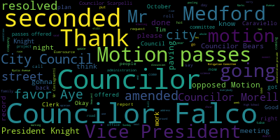
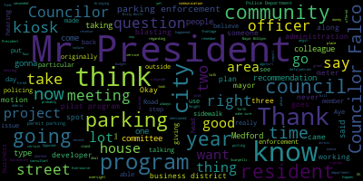
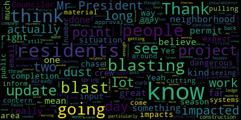
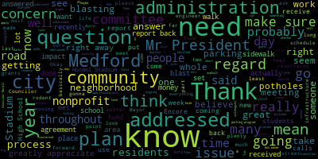
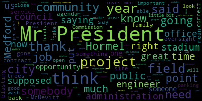
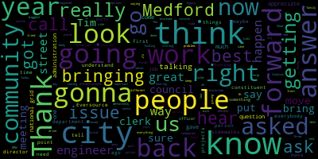
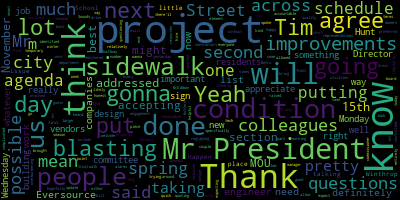

[Caraviello]: Good evening. 34th meeting of the Method City Council October 26, 2021. Mr. Clerk, please call the roll.
[Hurtubise]: Councilor Bears? Present. Councilor Falco? Present. Vice President Knight? Present. Councilor Marks? Present. Councilor Morell? Present. Councilor Scarpelli? Present. President Caraviello?
[Caraviello]: Present. Please rise and salute the flag. I pledge allegiance to the flag of the United States of America.
[Marks]: United States of America, and to the Republic for which it stands, one nation under God, indivisible, with liberty and justice for all.
[Caraviello]: Motions, orders, and resolutions. 21-598 offered by Councilor Morell. Be it so resolved that the city council request that the health department and building department me to discuss any existing policies around masonry dust caused by outdoor dry cutting report back to the council on the city city administration's plan in the interest of public safety council morale.
[Morell]: Thank you, Mr. President, yeah I've actually had a number of residents reach out with concern over this with our hilly landscape and Medford there's no shortage of masonry and walls in the community. And sometimes what comes with that is dry cutting where you can see clouds of dust, emitting from these cutting activities and. Oftentimes this dust can actually contain very incredibly dangerous materials like crystalline silica. There are OSHA requirements around this, but again I feel the complaints from residents who are seeing this go on in their neighborhood. I've connected with Building Commissioner Moki about this and I'm just curious to see If there's a way we can perhaps set some policies or guidance that people can get when they're pulling a permit. I know not all of these projects require permits, but if they're pulling a permit or something we can share just with the public because this actually is a very dangerous material that gets emitted, you know, on our streets in our neighborhoods that people might not know. give them the opportunity to flag this because there are abatement and engineering controls that can be easily done as far as vacuuming the dust or vacuum systems for the dust and water delivery systems. So I'm just seeking if it's possible to have these apartments meet and see if there are recommendations that can come out. for a policy so that we can point to this, we can inform residents and we can inform workers because they're the ones that are most directly impacted by this very dangerous dust. So I move approval.
[Caraviello]: Thank you. On the motion by Councilor Morell, seconded by Vice President Knight. Any discussion? All those in favor? Aye. All those opposed? Motion passes. 21599. and 21609 offered by Councilor Morell and President Caraviello be it so resolved that the City Council receive an update on the timeline of the Eversource project and paving and offered by President Caraviello be it resolved that the Medford City Council discuss the Mystic Avenue paving done Saturday night into Sunday morning. Councilor Morell.
[Morell]: Thank you, Mr. President. As we're nearing the completion of construction season, we got an update at the beginning of this project launching once again with the work earlier in the spring. The council had concerns about the speed at which this would be completed. I believe we still had projected another potential two to three years. We pushed back on that because part of that was held up by detail. I do believe they ended up having at least two crews going at once based on my experience driving through the area. But I think it would be great to have an update on, you know, what is the forecasted completion date? When can residents expect to see this, you know, the length of this project repave curb to curb? And if there are any places for residents to have input that haven't already been decided, it would be great for residents to know that because I know there's, you know, there are plans for a number of crosswalks, but also decisions around bike lanes and things of that nature, I think would be great. And residents would appreciate after this extremely long project, hopefully someday wrapping up, you know, having their input on what the future of their neighborhood looks like, particularly because they have been bombarded with the impacts of this project for so long. So seeing an update when we can expect completion, when is that curve to curve paving going to happen? And what are other ways residents can provide input?
[Caraviello]: Thank you, Council Member. And on my motion, I've got concerns about the paving that was already done. I had an opportunity to go by the part of Mystic Avenue that was done Sunday night into Monday. If you drive by there now, you can see it's pooling all over the place. Obviously, it's either it's uneven. I know very little about paving, but I can see that there's a pooling in several different areas. Um, it's already coming up in some spots you can you can see the, you can see there's no seals around the edges and say it's a, my opinion, it's shoddy work at best. And if this council is going to get blamed for the things that are done and say, I want to hold people accountable. who did the lousy work over there, because if this is what they did over here, we've got another few miles of street that has to be paved by Eversource. And they say, if this is the way they're gonna do it, it's not right. I mean, they paved in the, it's raining all week. Who paves in the rain? I went up and looked at paving statutes, says you shouldn't be paving when you know there's going to be three, four or five days of rain, because it never cures. So I think I think Tim's on the line here and I think we have Mr. Karen's here. I, in my opinion, I think that should be torn up and refixed again. To make it up to the where it should be the same status because at the end when it comes up, who's going to fit the bill for us, it's gonna be the taxpayers in the city of Medford. So Kevin, did you want to speak on that?
[SPEAKER_02]: Good evening, Mr. President and members of the council. It's a disgrace. I'm gonna put it to your point blank, all right? As far as the paving is concerned, as far as the timetable, all right, between the time it began and the records for the details and everything else, and Tim can speak a little bit more on it, all right, everything was pretty much completed before the rain actually started. It started a light rain, all right? But in my opinion, with many years in the business, all right, and I have Mr. Tenaglia, the highway foreman, same thing, many, many years, in our opinion, all right, there was not enough hot tub applied, all right? But again, of course, we've had rain ever since, and yes, there's puddling, okay, which obviously with the rain that worked in our favor as far as seeing where the divots were and, you know, the low valley areas, but now we've gotta wait for it to dry, all right, to closely examine the overall surface, all right? They did three pulls, which is, in our term, three passes, all right, as far as application is concerned. But right now, based on what we've observed, in our opinion, all right, maybe they only applied two inches. They should have maybe applied three, all right? There's some basins out there that clearly show, okay, the lack of, all right, the lack of the asphalt, all right? The highway department, prior to them paving both South Street and Mystic Ave, completely rebuilt 21 castings, or catch basins, as you wanna call it, in six days in preparation for them to come in. And, you know, they came in, all right, on time, Again, all right, we're not satisfied. I did talk to the city engineer about South Street. South Street is penciled in for Thursday during the day. But of course, based on the weather, okay, I know there's gonna be puddles out there and everything else. And if there's any kind of water on the existing road, they're not gonna be allowed to pay till the road is dry.
[Caraviello]: According to what I read, it says that the road should be dry for at least two days.
[SPEAKER_02]: Well, exactly. That's why, depending on the condition of it tomorrow afternoon, it's considerable puddles out there on the asphalt that still exists. They will not be coming in and paving over puddles on South Street. The South Street job is going to be a daytime job, where Mr. Gabb was a night job, when it does occur.
[Caraviello]: Do we have a representative on site when this work is being done? Yes, yep. And what was their opinion when that work was being done?
[SPEAKER_02]: Okay, same thing. Tim McGiven can add to what I'm saying, Mr. President.
[Caraviello]: Tim, was there a representative from the city on site on Sunday and Monday night?
[McGivern]: Yeah, so we have a field engineer for the whole job, AI. So I haven't received the report yet. I did talk to him this morning, actually yesterday morning, when I was talking to you as well. So, you know, the report, as Mr. Karen said, was that they completed before rain. The two most important things, as I wrote to all the Councilors in my email today, the two most important things when we're talking about paving is the temperature of various things, as well as whether or not there are puddles, standing moisture, on the milled surface or any surface that you're paving. Those are pretty critical. So, you know, our field engineer AI, they're well versed in this. I'm well versed in this. I'm very familiar with mass.spec. And, you know, the most important thing is during the compaction process, it's not raining on the material while it's being compacted. So that didn't happen, but we're going to keep a close eye on it. And also, like I said in my email, you know, Mr. Cairns, as well as Steve Tanaglia have brought up that there are some areas that maybe are lower or didn't get enough coverage. So, you know, we'll talk to our field engineer and see what, you know, we usually get information on depth of coverage and things like that. So, you know, the city would have to accept the work in accordance to the agreement before we move forward. I spent a lot of time watching paving operations in other places and it's pretty consistent to pave in windows and then have it rain. But from my perspective and from my professional opinion, as long as the compaction and the sealing of the surface, which happens during the final compaction, happens, before rain, you're in good shape. And actually as Mr. Karen was saying, sometimes rain afterwards can actually help you see, see deficiencies in the payment job so those steps don't need to happen. I've driven it myself but I haven't, you know, gotten up close and inspected things. Our field engineer is good at calling me directly if there's any issues. They're writing me and they didn't have any issues right away that they need to contact us about. And I await their field report. I get them at the end of the week.
[Caraviello]: But Tim, they knew it was going to rain all week.
[McGivern]: So did I. Yeah, I actually greenlighted it. Yeah, so I green lighted it because it met mascot specs. And my concern was that they get it done before the rain and they were able to do that. So as Mr. Cairns mentioned, there is a window on Thursday, but I've already given them the red light for Thursday because it is raining all day tomorrow, most likely. And like I said, one of the critical elements is that there's no standing water on the milled surface. So if there's standing water on the milled surface, potting, excessive moisture, that's a full stop because that is touching the hot asphalt before it gets compacted and the compaction is actually the most important process in the whole laying of asphalt. So, you know, that's what I'm looking for. There are many, many other variables, you know, travel time, temperature of the mix, temperature of the scupper, what type of hopper that they're using, all of these things. There's hundreds of factors, but the ones that I described are really the critical ones. And the good thing is if there was some sort of mistake made, a field engineer missed something or they skimped by with a depth or something like that, it's usually pretty obvious. And they usually pavements like that that are put down faulty don't last a winter. Every source is around probably for another year. And, you know, I know Councilor Morell was talking about an update. My understanding is South Street, obviously it's milled now where Looking for a window to green light paving, it's probably not going to be Thursday, I've already said no to that it's most likely going to be Monday or Tuesday, that weather looks good enough time for the surface to dry. And then we're probably looking at another construction season to tell you the truth, they say a partial construction season but knowing their pace, it's probably going to be a full construction season next year, and that would cap things off with the repaving of Winthrop Street and the rest of the project that they didn't pay this year. So the mass dot section of Mystic Avenue and Winthrop Street and the section of Main Street in front of the police station.
[Caraviello]: Tim, Mystic Avenue is probably one of the heaviest traveled roads in the city of Medford. Trucks going down it all day and night. And with skimping on the hot tub. It's not even sealed around the edges. Tim, not acceptable. We're not going to get blamed for this.
[McGivern]: Oh no, yeah, we're not. This is Eversource's job. I mean, we're providing oversight, but this is Eversource's job. So we don't seal, no one seals asphalt at the edges. You seal it at where you abut existing pavement and you seal at the castings because that water can seep in. So there's a tack coat that goes on around the castings, a tack coat that goes on the where they have butt edges, but up against the curb, it's usually not sealed. There's a tack coat right at the milling surface, right below where it butts up against the curb. So usually this should be, if I look at it closely and they're not, I don't know if it's a problem or not, I have to look at it, but there should be a little bit of a lip at the curb where the roller doesn't quite make it up against the curb. It's typically what you see, but you know, We still have to kind of like look at the whole thing and say, acceptable, not acceptable, you know, and see what needs to be redone when they come back, you know, after the winter, basically.
[Caraviello]: You have the DPW director saying that there's not enough hot sauce there. Are they going to come back and put more hot sauce down?
[McGivern]: Well we have to, we have to wait and see what our field engineer saw and also I believe there was a number specified in in the MOU so you know we look at how much asphalt was put down what the depth was that the scope was set for the for the actual paving. Um, and all that, that, you know, I expect to see that information in the report. So yeah, Mr. Cairns and I, you know, I trust his opinion. Obviously, if there are areas that he feels that, you know, there wasn't enough put down, it's simple. We just cut a little chunk out and we measure it. And if it's not to depth that as specified, then we find out what the limits are and they have to redo it. I mean, it's very simple.
[Caraviello]: And how are they going to carry all those spots with this with this pooling of water right now.
[McGivern]: So the this so the mo you the mo you does not have any regrading or elimination of low spots, it was a resurfacing just a million overlay that you know basic Milan overlay so it doesn't solve regrading or low points or anything like that, however. If there are low points that were not there before. And, you know, that should be pretty obvious.
[Caraviello]: Then that means one of them is someone that I went by this morning and there was people there taking pictures this morning. Okay. And I would hope that they're gonna be there to go. And I would insist that you have them take all the bonds for the next 10 years to cover this, because in the end, they're gonna be gone, and the taxpayer benefit are gonna be footing the bill for this, and we're gonna be complaining. So I would insist that you make them put all the bonds for their work to hold them liable. Councilor Morocco.
[Morell]: I mean, I think you just addressed this, but the question is, you know, if we find that there are, this is not up to snuff, is it going to be a full pass again, or is it going to be piecemeal work already?
[McGivern]: It depends on, it depends on if, you know, if they missed the depth in the whole thing, or if the mix was the wrong temperature. I mean, I would have been notified by our field engineer if they had You know, waited too long. The mix was cold. Uh, I don't think, well, I think they moved pretty quickly actually, because they had to do three passes in about six hours. So, you know, that's quick. They moved quick. So I'm not anticipating that there's going to be issues with temperature. Uh, it was, uh, 50 degrees or so at the lowest point. So, but if it was, yeah, I mean, if it was a, um, uh, you know, uh, a subpar or unacceptable job, not to spec. then the whole job wouldn't be acceptable. But if there are large swaths that are acceptable, that's good asphalt. I'm not a fan necessarily of ripping up asphalt that's in good shape. It is a petroleum product. It is a product that uh you know once it gets into place if it's in good shape it should last its life if it's put into spec so um we are looking at all of those and it is our job to look at all of that information and either accept the work or not accept it or create a punch list for repair and to hold the entity that is doing the work accountable, just like we did with Comcast when they did Medford Square, just like we're going to do with the developer who's paving a portion of Medford Street next week, you know, just like we do with any contractor who is coming into the city to pave a public way, basically. So we would hold them accountable just like anybody else. And President Caraviello, that is certainly a suggestion we will take up for consideration, some sort of bond, if it turns out that there are, you know, significant issues with that. If I believe, Mr. Kearns believe, our field engineer believes that there are significant concerns where we feel like there needs to be a bond in place for 10 years and hold them accountable. Regardless, that is their work and it has to be either accepted or not accepted by the city. So that's the next phase of the process, basically.
[Morell]: And it's your position that's the final decider as far as it being accepted or not?
[McGivern]: I would imagine so, yeah.
[Morell]: Okay, thank you.
[Marks]: Councilor Box. Thank you, Mr. President. We have two department heads before us tonight. I just wanna make sure they're here and they're not intimidated by being here before the Medford City Council.
[McGivern]: Is that a question?
[Marks]: Are they both fine with being here? You know, I'm intimidated appearing before the Medford City Council. Okay.
[McGivern]: I'm not intimidated by being in front of the Medford City Council.
[Marks]: Thank you, Mr. Engineer. Have the deficiencies that have been pointed out by the city DPW staff been brought to the attention of Eversource as of tonight? No, they have not, not yet. Not yet. When do we plan on bringing this forward to Eversource?
[McGivern]: Well, we have, um, I, you know, I want to get the field engineers field report. I want to take a look at myself and, uh, you know, um, I do need to sit down with Brian and Steve and make sure we list out what, what they saw. So, you know, we can put eyeballs on it and make sure that, uh, um, we confirm the observations that they've made and make sure that we're, um, you know, organizing that information, that material correctly, so it can be addressed. So I have some issues as well. There's issues with ADA ramps out there that I think are, you know, serious issues with how they decided to do the ADA upgrade. So there's disagreement there. You know, other things like they considered curb to curb, gutter to gutter when they first did the milling. So we've been on these guys quite a lot to do things per Medford standards. They're falling short in places and we are calling them out on it. We have a weekly meeting with them on Thursdays. So I plan to try to have a pretty concise list of issues with work that they've completed so far on Thursday, so it can be reported out.
[Marks]: Okay, so that's in the process right now then?
[McGivern]: Yeah, exactly. So that's absolutely in the process. Yeah, that's just part of the work that we do.
[Marks]: Okay, so if we can just be kept abreast of how that goes along would be helpful. The second question I had is where do we stand with the mitigation items with Eversource? Have some of the items been completed to date and where do we stand?
[McGivern]: The items in the MOU, like the Winthrop Street sidewalk and the Winthrop Circle ramps and things like that. Sure. So some of the mitigation items are on South Street. And so when they do the South Street paving, those will come to fruition. The striping of South Street and some raised tables for traffic calming. So those will be, as soon as they basically do the paving, we'll see those. And then once they do the striping, we'll see that striping work. And then as far as the Winthrop Street sidewalk goes and the ramps in the circle, we have the contractors queued up. In other words, we got contracts open with contractors. We are most likely going to do that work in coordination with the the development that is redoing a portion of Lorain Road. We've been working with them over the last couple of months to coordinate that layout. So residents may see that layout actually marked out in the field. So that would be for our contractor when they get that sidewalk work in before the restoration, the full restoration work, sometime later in the season, whenever Swiss does that. So that winter tree work is gonna happen early, mid next construction season.
[Marks]: Right, so that was actually very helpful to get that update. So the sidewalk work that was originally included in the MOU did not include the sidewalk up to Playstead Road, from Lorraine to Playstead Road. And this council requested by unanimous vote to have that sidewalk done as part of this project. Is it fair to say that that's not gonna happen?
[McGivern]: Um, it's not fair to say that so I've been I've been advocating for that, um, you know, and I believe, you know, I'm trying to make it happen put it that way. I mean, I'd like to get get the funding to get the sidewalk and curbing all the way up to place that. There are challenges associated with that. There is a sidewalk from Smith Lane to Playstead. It's skinny. There's no curbing. There are some areas where the grass strip has been paved. So there are potentially some design issues that we have to overcome. However, I'm trying to get that work done before the Winthrop Street restoration. I haven't made any commitments to anybody, but I'm pursuing that to see if we can figure out a way to do it. So, I'm hoping that it works out.
[Marks]: Thank you. Thank you, Mr. President.
[McGivern]: Mr. Kearns.
[Marks]: Your mic's not on. Oh, it's on. You're good. You're good.
[Falco]: Now it's on.
[SPEAKER_02]: Got it? Okay. Okay, when we get a break in the weather. All right, I'm gonna walk, Mr. Gaffney. I drive it every day, a dozen times, all right, and you can see, you know, a lot of things as you drive it, but I'm gonna walk it once, okay, it dries out.
[Knight]: What if vice president, I'm hearing the city engineer say that we have somebody that's on site that works for the city. Why is the DPW commissioner walking it if we have somebody that's on site that's supposed to be doing this anyway? We have somebody on site that's saying that's supposed to be overseeing the project and we have the highway superintendent, the DPW commissioner saying that's not up to specs.
[SPEAKER_02]: Let me say this. If in fact, councillor, I totally disagree again with the report. And again, the report hasn't been filed yet with the city engineer. If I disagree with it, then they're gonna be before me and explain why.
[Knight]: They are saying apples I'm saying oranges, what I'm saying I guess is why is it gotten to this point if we have somebody that's there. That's supposed to be overseeing the project anyway. And, you know, if in your expert opinion and in this gentleman's expert opinion, it doesn't cut the mustard. We have somebody that we've appointed and put in a position to be overseeing this project. Why is it getting to this point.
[SPEAKER_02]: Well, for starters, obviously, I cannot speak right for, you know, the engineer statements to Tim. Once they get the finalized report, they sit down.
[Knight]: I guess the question, who is responsible for the oversight of the project?
[SPEAKER_02]: Okay, all right. The engineer that the city engineer has assigned to the job.
[Knight]: Okay, who is that?
[McGivern]: That's AI engineers.
[Knight]: They were hired before I started so it's not it's so it's not a it's not a person that works in this community that's assigned to do that it's a consultant or a contractor it's it's an outside source that's responsible for doing the oversight oversight it's not it's not like we have George Connie in the engineer's office that's responsible for it we've had some outside entity that we've contracted.
[McGivern]: Yeah, so every source paid for gave the city money to have a field engineer there, they report directly to me. And, you know, they're responsible for making sure that the work is done to Medford standards to the agreements that were established. with every source. And then I will tell you that we have had to supplement that work, you know, whether it's George, myself, someone else from my office to go out and look at something to confirm something. We do that on a regular basis, but usually construction jobs require full-time observation. So that's what AI is doing, full-time observation.
[Knight]: Okay, so we have AI engineering, who's the city's contract for the oversight of the project. How often do they report back to the engineer's office with the specs and the like on progress of the project?
[McGivern]: Sure, if there are any immediate issues, I usually get a phone call or an email right away. But besides that, I get daily reports on a weekly basis. So every Friday, I basically receive the weekly reports for the week.
[Knight]: And then, did I understand you correct when you said that it's not part of the city's MOU or method standards to include regrading in this type of contract. Correct.
[McGivern]: And can I just ask why I don't know the agreement was made before my time. I have all kinds of questions like that, Councilor Knight with with this particular agreement, and that's, that's one.
[Knight]: I should tell my you and I have a number of conversations and I think we share some of the same concerns but I mean ultimately, if the community is going through years and years of inconvenience to get these type of projects, taking care of. There should be some sort of measurable mitigation that we can receive. would make sense to if they're going to be tearing up our streets in entirety to when they resurface them, resurface them at a gradient that's smooth, right? I mean, I think that that would only make sense to be included as part of the MOU and the specs. But with that being said, you know, I appreciate the fact that we do have a field engineer, but I think that the work that is being conducted needs to be looked at a little bit harder and it needs to be inspected a little bit stronger. And the field engineer needs to be a little bit more calm.
[Caraviello]: Thank you. Councilor Falco.
[Falco]: Thank you, Mr. President. And I have to, Mr. President, I agree with you. I think you made a very good point. You take a look at Mystic Ave. It is probably one of the most heavily traversed streets in our city. And it's been ripped up. It's been ripped up for a while. We have one chance to get this done and get it done right. And I have some serious concerns now. You know, Tim, I mean, we all knew it was gonna rain Monday, Tuesday, and Wednesday. I mean, is that really the best time to put down hot top or asphalt? I mean, is that the best time? I mean, could we wait another week? I don't understand the rush at this point.
[McGivern]: It was already pushed back and delayed. And I think everybody knows that there are issues with the milled surface and raised castings. It creates a hazard. So this window was acceptable and it met specs. So that's why they got the green light to do it on Sunday. I know that there is never an ideal situation where everything is done perfectly to spec. But if you read mass.spec, and I mean, I've been working with this for, you know, going on 10 years now, you know, they typically even allow when it starts raining for the last load to be put down and paved. I mean, that's on your highways that you drop. So I mean, like I said, the most important from an engineering standpoint is the compaction process and making sure that the temperature is correct. the right type of roller is used, and the asphalt is compacted during dry weather, and the surface is dry that it's adhering to. So those are critical. There's hundreds of other variables, and it's almost never perfect. So it was within the specification and within the green light That and that's that's it and we're getting up to the end of the season, every day that goes by now, it's going to be getting colder, higher chances of rain. So, towards this time of year, the plants close in November 15. Every window is looked at, and if you, any city, any operation, paving operation, when they're trying to do work around this time of year, these are the type of windows that you get. Eversource wants to pave it Thursday, but the problem with that is it's going to rain Wednesday. So if it's raining two or three days before you pave, that is a problem. If it's going to rain after you pave and after you've compacted and sealed the pavement, it's not that big of a deal. It really isn't. But again, what you're looking for, are there puddles? Is this going, when it gets compacted, is that compaction going to be negatively impacted by water falling from the sky or on the road? So that's really what we're looking for. Rain damages pavement, even if pavement's been sitting there for 20 years and it's nice and secure, rain damages it. Every time it rains, all of our pavement gets damaged. That includes freshly done pavement, and that includes pavement that's been there for 20 years. So I think that it's not ideal, but what would be ideal is if asphalt was allowed to cure for many, many days without any vehicles on it and with no rain and perfect humidity and perfect temperature, but we never, ever get that. So hopefully that answers the question.
[Falco]: And I understand, and I understand there's never a perfect time for this, but I guess my other concern now is, you know, we're talking about, it's been resurfaced. Now we're talking about the quality of the resurfacing and whether or not there was enough asphalt put down. And now it's been raining for three days by the time this is all said and done. And now if it needs more asphalt on top, I would imagine that moisture is gonna set in. You know-
[McGivern]: You don't put asphalt on top. So if they were short by half an inch, you don't put a half an inch on top, you cut out the section that is insufficient and you put down the correct amount and it gets tapered in. So yeah, that's not, you don't just put it on top. And it's the same, so it's the same spec. So if you're putting a top course on a binder course, it works the same. If there's standing water, standing moisture on the asphalt surface, you don't pave. The reason is, is because the oil that's in the asphalt, the bitumen, that material, it hits the water and it repels. So it doesn't adhere. When you put down pavement, you want all of the particles of sand and gravel to adhere to the bitumen and for the bitumen to adhere to the surface. When you compact it, you push it all together. If there's water in there, it's going to be detrimental to the pavement. If there's no water in there, and you compact and you seal, then you have good pavement, and it was put down to spec. That's what we're looking for. That's what folks like MassDOT are looking for. That's what every probably city engineer that's looking for in my position. So that's, you know, if it meets the spec, that's what we want to see. We want to see operations that meet the spec as far as the temperature, rain, the conditions, all of that. And, you know, MassDOT does go into detail in their specification about what weather limitations are allowed. It really focuses on temperature because that's a key thing. So if it's 40 degrees or lower, no paving because you're just not going to get good pavement.
[Falco]: But it sounds like there are pieces of this, of this road that we could possibly dig up to make sure it's done right if it wasn't done right the first time.
[McGivern]: Yeah, so there are methods that you can use to determine whether it like if, like, for example, you know, Mr. Karen says, oh, this area, it looks like it's short, you didn't put enough down, or maybe they milled too much or something. We have a core. And you get a little core and it tells you how deep the pavement was, whether or not it met spec or not. If it doesn't, it's usually pretty easy. If it does, it's usually pretty easy. It's typically straightforward stuff.
[Falco]: Okay, so I'm just concerned that we're digging up new pavement already. That seems to be one of the biggest complaints I get is when we're putting down new roads and all of a sudden, you know, someone's in there a week later digging up pavement right away. I mean, that's the last thing I think anyone wants to see is that we're going to be digging up roads, when it was just recently resurfaced so that that's definitely a concern, and I always think about the structural integrity after that because I feel like anytime you dig into a road. Afterwards, I mean, it's always just, you just get potholes, it's falling apart. And if you look throughout our community, you know, infrastructure is a major issue. And we have potholes no matter what neighborhood you go to, there are potholes throughout this city that need to be addressed. And I'm really concerned that we're having this road, it's recently been paved, and I feel like it could very, It's very possible that there could be issues already so that that's, that's one of my big concerns I'm also concerned about, you know, the AI engineers, you know, I mean how to do they they will burst and what our standards are here in the city of Medford with regard to paving.
[McGivern]: Yeah, we so I mean we use typical mass dot specifications for asphalt and for placement, and I will say just to comment on your. your statements there. So if you're talking about surfaces, like removing surface that was not put down to spec, that's different than actually digging to the road. We did have an issue with a contractor digging into High Street after we repaved it. And everybody was furious about that, including myself. That was completely uncalled for and unacceptable. And they were supposed to be there two days before the paving. So things like that do happen. And I believe on 4th Street, after we paved 4th Street, there was a water main break on 4th Street. And then sometimes there's gas leaks after we pave, and then National Grid will come in and fix the leak. And I agree, it's not OK to happen. We do our best to coordinate that type of work, and we try to get the gas lines, get National Grid in there to replace the gas lines beforehand. And that's work that we're doing in my office now, trying to coordinate the next round of paving with the new pavement management plan and all the new information that we have.
[Falco]: So when they put down the road and they resurface the road, AI engineers are present and they're evaluating the process and making sure that it meets the standards that are set forth by your office, I'm assuming. So if something's not right, are you notified right away? Is there an engineer in your office notified right away or do you wait for the weekly report? How does that work?
[McGivern]: I'm usually notified right away if it's a if it's an issue like say they're trenching and they come across a utility that they didn't anticipate or they break something that they didn't anticipate. I usually get a phone call right away. But if usually no news is good news if I don't hear from them I get the weekly reports and. you know, I see if they're, if usually it's, you know, everything is fine. But yeah, occasionally, I do get notified right away. Sometimes it's the day after if it's not an immediate thing, or if they need an answer on something.
[Falco]: So with regard to the road surfacing, in this case, was were you notified right away? Or did AI wait a few days? How did that work?
[McGivern]: So I was told when I checked in with them on Monday morning that they felt it was placed per specification. So that's what their, just their verbal report was to me. So I'll wait and get the report and see if there's any additional information in there. And if I need more information, I'll be asking them. So.
[Falco]: So what's the process from here on out? I mean, so if you know there's an issue, do you go down right away and check it out so it can be, you know, remedy right away or do you just wait for the report and go from there?
[McGivern]: We can't remedy the asphalt right away. So what we will do is collect information from Mr. Cairns, Mr. Tanaglia, If the field engineer has any observations that include deficiencies, any deficiencies that I see, Mr. Blake sees with the crosswalks or ADA compliance or anything like that on the sidewalks. And then that is put into a report to say these are all the deficiencies and why we can't accept your work or this work. and then that work has to be remedied. If that remedy is asphalt related, so that surface coast that they put on, we would have to coordinate with them to figure out what they need to fix, the limits of what they need to fix. Usually it would be in a situation like this. Say, just a hypothetical example, if it turns out they didn't put down enough thickness in an area and created a low point, where do you draw the line to say okay well you have to replace this section from here to here or something like that. So that's how we would go about that and it's fresh pavement so you have some time to make the budding seals nice as opposed to you know waiting a few years and trying to tie something in which never works out that great. So there's opportunity to fix it, but it's not going to happen right away. And also, we don't want it to happen right away because it has been raining and there are issues with water on the surface. So if they go to fix what we say is a low point and then they put the pavement down and it's wet and standing water, then it's no good now anyway. You know, the idea is to put a comprehensive list together of any deficiencies that we believe exist. Some might need to be tested, for example, like a core or something like that. And then from there, we would solicit proposals from Eversource on how to repair the situation. So that's sort of a rough outline of the process.
[Falco]: Tim, last question. Councilmarks mentioned earlier about those sidewalks going from Lorain Road to Playstead. I know you said you're working on that. Do you have any type of a timeframe as to when you think you might have an answer as to whether or not that's something that we can do?
[McGivern]: I'm hoping over the winter to suss that out completely. Funding and design, if we need design. Things like that. So we, we secured the well not secured that's not the right word. We completed our coordination and design and bidding and getting a contractor for the work that we do have queued up so now that that's done that. gives us the opportunity to work on trying to get the rest of it, to get it funded, because it's, you know, putting $50,000 worth of sidewalk in, it's not much. So to do the next, whatever it is, 800 feet or 1,000 feet down to playstead, that's significant money that's not in the Eversource agreement. So I have to, you know, I've already mentioned it to the mayor, and we're gonna have to sit down again. There might be opportunities to move some things around in the Eversource agreement to get that done. There's $75,000 for a stormwater BMP. I'm still not exactly sure why we need that. I haven't been given a good answer yet. So, you know, that might be opportunity to use some of that money for a sidewalk. Don't know yet, but hopefully over the winter, Councilor Falco will have everything sussed out. I'm hoping that would be my goal.
[Falco]: And I couldn't hear that though. You said that there was a stormwater something. Can you repeat that please?
[McGivern]: Sure, yeah. In the MOU, there's $75,000 set aside for a stormwater BMP or best management practice on South Street. So I have been inquiring here and there about the purpose for that and the reason and all that. And I'm still not quite sure what that is. And it doesn't make sense to do it if there's no good reason to do it. So with that said, we might be able to, you know, work with that resource. Of course, it would be a renegotiation of that item. potentially put it towards sidewalks on Winthrop Street. No promises but that's kind of in my head that's what I would like to try to do to at least open up that money to do that and I think the city would still need to supplement because you know it's significantly longer and may require design as well which always adds complexities. It's never really easy just to add curbing in the sidewalk and I know residents just want us to add curbing in the sidewalk but It's not as easy as that.
[Falco]: Tim, thank you very much for your help. Appreciate it. Thank you.
[Scarpelli]: Thank you. Thank you for bringing this forward. And I'm gonna go at this a few different ways. Tim, first of all, thank you for listening to us and giving us the answers as a department head the best you can, because we've been accused of being bullies in sense to other department heads, but I think people don't understand. When this isn't a console Scarpelli issue of console Falco show council moral issue. This is an issue that we get from our constituents. I think all of us got calls saying is this crazy. Look at Mr. Gav, what a mess, what are they doing. It's not a reflection to how we feel. We're the voices that people call to ask these questions. So first, I wanna thank you just for doing the best you can to answer these questions. I know they're not ideal answers that we all wanna hear, because we all wanted to hear you say tonight, Tim, is okay, it's all gonna be repaved, everything's gonna be perfect, and we'll do it right. But we know that's not the case, but we do have to figure this out. And maybe not Mr. Cabot as we move forward. I asked year after year of a clerk of work, someone that represents the city of Medford and what the city of Medford requires to their specifications for what this council is going to be asked on and answer these questions. not a consultant and I asked at the budget meetings, the chief of staff responded by saying, we would like to look into I think was a resolution put in place that we'd asked that. Why can't we as we bring all these projects into Medford, ask for part of a fee to go to a clerk of the works that's hired. Through the city of method that knows our specs understands what we expect in this community, because I'm sure I'm sure that the engineer that they hired is a qualified engineer, but at that engineers there to collect a check from ever source. And that person is going to look at that and say hey it looks great. I will tell you in the community I work in. If they know there's rain coming in on a Monday and a Tuesday, like they have, and they've got their trucks out there that night before, I'm gonna tell you straight out, I know these people, they're gonna say, absolutely not, because I'm not sitting there at a city council meeting the next week, like we are today, dealing with this, because now we're talking about ifs and what ifs. And that's the problem now. So, and again, this isn't about you, Tim, you're doing the best job you can, and I appreciate that, but I'd like to make an amendment to this, that we ask the city administration to look into, with the city solicitor, a proper form of funding that with all these projects that are coming in, that we have a clerk of the works that works for the DPW director, that answers to the DBW director, not that the DPW director has to ask the engineer who has to ask the Eversource engineer that they paid for it to see what happened or what's going on. I asked for a resolution was I asked for all the paving projects that was that were put out there for the last two years I got the report back which is great is all of the small jobs that were put out there, the Tufts, the C.J. Daugherty companies, you have the addresses. What I really wanted to see is all of the national grids, the Eversources, and what I got back was national grid, no address. Because when I drive to an area and a constituent has an issue with, oh, they cut this up, who is they? So they give me a time frame, so at least I can refer back as I drive by and say, oh, that looks like a job in front of 17 Butler Street, that that was a gas recut and they had to go back in because now that road is sinking, it's easy to go back and tell National Grid as we move forward, this is the work that you're doing. So again, it's frustrating to the point that we sit up here and people in the city that don't know the process and what happens come up here and the braid us because, and I don't begrudge them for that. This is what we're here for, but they braid us because the streets of this and the streets of that and the sidewalks of this and sidewalks of that. And most of the time, there's nothing to do with this body or the city employees. It has to do with the outside agencies that come into the city. So I implore that the city administration, there are definitely ways to do this, whether it's working directly with the DOT, Eversource, National Grid, these companies have big bucks, and we have to find a way that we can subsidize their funding to make this happen, to bring in a clerk of the works that'll make sure they're doing what's best for the city of Medford, not for what the company that's giving them their paycheck by the end of the day. So again, Tim, again, this is no reflection on you. I know this is a difficult position you're in and that's all we keep hearing. Everybody here has been campaigning and all you keep hearing is infrastructure, streets, roads, sidewalks, curbs, catch basins, you hear it everywhere. But if we don't have the things in place as we move forward, this is only gonna get spiral even more out of control. And this is a huge issue, because I think you're right, Council President, we're gonna be sitting here, whether I'm on the other side of the rail, this side of the rail in six years, we're gonna be talking about how deplorable Mystic Ave looks again, and shame on you, because this came in front of this body back then, and we just threw it away. So thank you.
[Bears]: That's the best. Thank you, Mr. President. I agree with much of what my colleagues have said. I just have a couple of questions for you, Tim. The first ones, and these are meant to be, I think, short, reasonable questions. Do you expect that the issues that have been identified will be addressed by November 15th? And do you think that we will be accepting the project or will it just be a temporary fix and they might have to go back at it next spring?
[McGivern]: Well, November 15 is fast approaching so if there are first I need to understand what all the issues are, what can be resolved for November 15, if they can be. And then, most likely if there's fixes or repairs that happened before November 15 I'm going to be concerned about them anyway because we have winter coming. So winter will tell you a lot, especially if there's a lot of freeze-thaw cycles. Any pavement that didn't adhere to the pavement underneath the milled surface will surely come right up. So they're in the city for another year. We pushed to get Mystic Avenue and South Street done this year, because we knew the conditions of those roads. So hopefully that answers your question. I mean, it's really an I don't know, but it's explained I don't know.
[Bears]: Sounds to me like you're gonna try to get as much done as you can before November 15th, but likely that there'll be this project, this section of the project you won't be accepting until next season when you know what the winter has done to it.
[McGivern]: Yeah, in general, we're not accepting it, we're not going to be accepting things until after the after the winter anyway, and making making that known.
[Bears]: Great, and then second kind of set of questions, hopefully relatively quick. This MOU came before you were the city engineer. Do you now include regrading in MOUs and will that be included going forward?
[McGivern]: There hasn't been an MOU with a utility company like that. I believe this was a sort of a one-time rare thing.
[Bears]: Do you put in your project conditions, Tim?
[McGivern]: Sorry?
[Bears]: Do you put it in project conditions.
[McGivern]: It's very project specific console various so like for example, there's a developer who's going to be milling and overlay up on Medford street near the Somerville line. And that is an area that we looked at. The surface grade currently is acceptable. So there would be no reason for any recreating to happen. But that's a project. So we would put that into the project conditions. If there's a low point, something like that. So yeah. So when I look at projects, so I do all the project reviews for the city as well with the engineering division. So if there's elements like that, or issues like that, that are existing within the reasonable limits of the project, then I have them fix it. You know, I also have them, one of the things that I've been trying to do since I started is have all the frontages repaired on any project. So sidewalks redone, all the utilities, all the patches redone with a large, you know, homogenous mill and overlay after 90 days. So there's a lot of things I'm trying to implement in my office to catch up with a lot of the things that have happened over the years. One of the biggest ones is that we, and I think lots of people know this because the pavement management report came out. We don't spend nearly enough money or resources on our asphalt and sidewalk assets just as a city. So we need to think hard about that. That pavement management report really lays it out for us. And I'm just trying to call attention to that as much as I can.
[Bears]: Yeah, thanks Tim and I agree with you. I think I've brought it up a few times and I think it raised alarms across the board, across the city. So, and I agree we definitely need more resources. On the engagement with these companies, specifically the larger utilities, which we work with regularly. Is it possible for us to send a list of preferred contractors that, I mean, I know these companies are the ones doing the projects, I guess, either A, is it possible for us to say, Eversource, we're gonna hire the people, we're gonna manage the people, and we're gonna bill you? Is that something that we can do? And if not, is it possible for us to come up with a list of vendors that we trust to do quality work and have them choose from those vendors?
[McGivern]: So we typically try to get Any private entity that's doing work to do to do their own work, and then review and accept it to try to do other people's work and that one suggestion you had would be too difficult and would just suck away resources we I mean we have capital projects that we're having. TAB, Mark McIntyre TV & Recording): trouble working on so to then put I call pbos projects by others for me to assign my staff to pbos all we would be doing would be pbos so. TAB, Mark McIntyre TV & Recording): that's very difficult your second suggestion is a good one, we do that with drain layers so anyone who worked as any pipe work in the city man will work pipes anything like that. have to be a licensed drain layer, so that it's a review process. And as far as paving and things like that, you know, typically the paving companies are, they're bigger companies like the EJ Pavings, the Riley Brothers is the one doing Eversource's work. They're known, they do massed out work, they, you know, they're familiar with the specifications and things like that. So, you know, could we create a list of paving companies? Yeah, I mean, that's on the table for sure. It's something we haven't done, I don't think, but it could be something.
[Bears]: All right, thanks. And I appreciate that. Clearly, they're not doing their job. And we're trying to find ways to hold them accountable to do a good job, I think is important. So any way that we can do that without overburdening our own people, I think is important. That's all I had, thank you.
[Caraviello]: Thank you, Vice President Knight. Good. Any further discussion?
[Marks]: Councilor Marks. Just a quick question to Tim. Tim, did I understand you correctly when you stated that AI consultants did not bring any concerns regarding deficiencies with the paving on Mystic Ave?
[McGivern]: Not yet.
[Marks]: Not yet. Okay. And considering they are the oversight and the watchdog for the city of Medford. If we do find out that there are deficiencies that have not been pointed out by AI, but rather pointed out by the city. what are our next steps, because this project is far from over, to ensure that we have the proper oversight, and knowing that that may not be accomplished by this current company, what are the next steps?
[McGivern]: I'd say probably looking at the qualifications of the individual inspector, so who was on site that day, and whether or not they understand standards that they're dealing with, whether it's city utility standards or mass dot paving standards that we adopted or anything like that, to see if that person is qualified to confirm if they are or not. And if they're not, then to request from AI that a different inspector be put on the job that has those qualifications. I'm hoping that's not the case. And then if it's just a total failure of AI, then that would be a breach of contract if they're not qualified to be doing the work or they're not doing the work that we expect, then we shouldn't be paying them. They do contract with us. We get reimbursed from Eversource. So they don't get paid directly from Eversource. They get paid from us. So those would be the next steps, Councilor Marks.
[Marks]: Right. In your professional opinion, Would an oversight of that nature just say it's regarding not having sufficient coverage? So it only has two inches compared to three inches. Is that sufficient in nature to ask for a termination of contract?
[McGivern]: It depends on how extensive it is and if it was a... So I used to do this work and at the time my client wanted measurements every 100 feet or so for depth and we took you know, measurements every hundred feet. But if in between those measure markers, if there was a dip in the pavement depth or there was an issue with the scupper or something like that, that wouldn't be picked up by the inspector. It depends on what they're looking at and what they're measuring and if the contractor is trying to get things by on purpose or if it was, you know, a legitimate mistake with the machinery or something like that. There's a whole host of issues that can go wrong. I mean, from the dump truck and how it opens to how the hopper accepts the pavement, whether or not the hopper is heated correctly, to whether or not it's putting it out in the correct width. So the inspector is looking at many, many, many, many different things. And so it's a question of judgment, my judgment, if they, you know, hey, how did you guys miss so many things? Or was it just one or two things that you missed? And is that appropriate? Or, you know, will you just, have your blind, you know, have a blindfold on the whole time or whatever. So I don't, I'm just, you know, these are hypotheticals. I don't know exactly what they were looking at until I see their report. Their reports are good. They have pictures and they have a good description of what they looked at and what they observed during the operation. So, you know, you should see that report on Friday.
[Marks]: Right. So there potentially may be some ramifications after we find out what, happened on that particular site.
[McGivern]: Yeah, exactly. Like I said, if they had their blindfold on and they were sipping coffee and not paying attention, then you know, obviously, that's, that's a problem. That's unacceptable.
[Marks]: Thank you.
[Caraviello]: Yep. So Tim, um, so this company is going to be charged with paving the entire length of Mr. Avenue, correct?
[McGivern]: The scope of Eversource's agreement would be the rest of Missick Avenue, so the state controlled portion, which is about where they left off, near Crescent Street, north of Atlas Liquors, to the Somerville line. So that's on the slate for paving, as well as the area of Main Street in front of the police station, South Street, and Winthrop Street from approximately the garden site all the way up to Winchester.
[Caraviello]: So this company is going to be in charge of paving probably some of the heaviest travel roads in the city of Medford. And like Councilor Falco said, we only have one shot to get this done right. And we got to get done on someone else's dime. And as Councilor Scarpelli mentioned, I don't think there's a councilor behind this rail on the other side of the rail who doesn't have that on their literature. The biggest concern is the conditions of our streets. And again, if they're doing 100 yards of poor construction on a small section of Missing Avenue, how is this gonna be impacted for the rest of Missing Avenue, South Street, and Winter Street? Again, some of the heaviest travel roads in the city of Medford. Are they going to be put on notice right now?
[McGivern]: Well, I'm not sure if it's the same company. So Riley Brothers was this contract.
[Caraviello]: Ultimately, it's either Eversource or McCourt, correct?
[McGivern]: McCourt is not involved in the paving.
[Caraviello]: So it wouldn't, the purpose of charging the paving, I think they should be put on notice now that this is not going to be tolerated going forward.
[McGivern]: Yeah. So we meet with, we meet with Eversource on a weekly basis and we'll certainly be discussing this on our Thursday afternoon meeting for sure. So if you're going to call that putting on notice, that the commissioner and myself, and we've seen some deficiencies, then yeah, they get put on notice. I don't know if they're going to end up going with the same contractor for the rest of the work, but you are correct. Eversource, it is their project, and they are the ultimate responsibility for this work.
[SPEAKER_02]: Thank you. Mr. Kearns? I may add to what Tim is saying. All right, when this project all began in Charlestown, came up, Mr. Gav, as we know it, the original contractor at that time was the Bond Brothers, not McCourt. And then in the middle of the winter, before they were ready to enter our city, oh, by the way, Commissioner, we have a new contractor, McCourt, all right? Vaughn brothers had already leased out a parcel of land to stage his equipment in the city and everything else. What happened, I don't know. But also keep in mind that once everything as we visually see is done, they're not done. Because afterwards, okay, they're gonna start pulling the cables through everything they're putting in the ground. Okay, so to realistically think, all right, in my opinion, they're gonna be done this time, oops, this time next year and just leave the city? No, because they're gonna start pulling that cable, all right, and that's a very, very technical, slow process. So are they gonna be digging up where they just paved? Okay, no, they won't be digging it up, okay, they'll be feeding the spools of cable into the pipes that they're currently laying underground. All right, but okay, you have to pull them very carefully and they have to be taught. Okay, but not too tight because if you break it, all right, now, okay, where are you? So with the, what we visually see every day, all right, the job is not finished. Then they got to run the line all the way down. you know, from probably Charlestown, I don't know exactly where, but at least from Medford all the way right down, okay, and right up Winthrop Street. So they still got a ways to go.
[Caraviello]: Okay, any further discussion? So on the motion by Councilor Morella, Councilor Caraviello-Viela, seconded by- Amended by, have an amendment? As amended by Councilor Scarpelli.
[Marks]: I also amended it, Mr. President, asking for a report.
[Caraviello]: And it is amended by Councilor Marks.
[Bears]: Second.
[Caraviello]: Seconded by Councilor Bears. Mr. Clerk, please call the roll.
[Hurtubise]: Councilor Bears. Yes. Councilor Falco? Yes. Vice President Knight? Yes. Councilor Marks? Yes. Councilor Morell?
[Morell]: Yes.
[Hurtubise]: Councilor Scarpelli? Yes. President Caraviello?
[Caraviello]: Yes, I'm in the affirmative. None in that motion passes. Thank you, Mr. Chair, and thank you, Steve, for coming up. Thank you. 21602, offered by Councilor Falco. Excuse me. 21600, offered by Councilor Morell. And 21601, offered by Councilor Falco. Being so resolved at City Council, receive an update on the continued blasting at 541 to 551 with the street project be a result of the administration update city council regarding the blasting that is occurring with the street. And what is it, what is it is doing to protect the residents of the neighborhood and the students and staff at the school from the effects of this work. Councilor Falco.
[Morell]: Thank you, Mr. President. Yeah, of course, let Councilor Falco speak I'm sure he has to want to extrapolate this on this more but I mean this is something I understand that the blasting company received a permit for two months worth of blasting, and I believe it began on August 31, so we are pretty much at that two month point. I'd like an update on how much longer they're going to be blasting, how the weather impacts this. We're talking about the end of construction season. Is it the end of blasting season? Is this something that's going to pick up again in the spring? I think residents are feeling this and hearing this much farther than they anticipated. I think partly because, and I live right over here, the neighborhoods are on a lot of ledge and they're essentially on the same ledge that's being blasted you know, a quarter of a mile away. So there's this, you know, conduction that's getting to people's houses. And I think some people are starting to see issues that may not have done the insurance assessment because they thought they were far enough out. So in addition to getting an update on, you know, how long is this blasting going to continue? I'd like to know what avenues residents have who are being impacted by this, who did not expect to be impacted by it, and what it's doing to their homes. Additionally, I just, it's an unnerving situation, I think, for a lot of people in the area, because some days there's no blasting, some days there's one blast, some days there's two blasts, and it impacts people in different living situations in different ways. So I'd really like to get an update and have, you know, have this information be open to the public. I mean, the fact that residents have to chase down this information when they're, you know, yards feet away from this massive blasting project, it's not right. And the fact that they have to chase us down and then we chase people down to try to get these answers is kind of ridiculous. So I'd really like to see an update on that. And I pass on to Councilor Falco if you'd like to add.
[Falco]: Let's go. Thank you, Mr. President. Thank you, Councilor Morell. I have received many calls as well from residents in that neighborhood, because as Councilor Morell said, there are many residents that are impacted on Winthrop Street with regard to this project. And there are students impacted as well. There's many students walking to and from school. It's a blasting area. It's dangerous. And you're right, as far as getting information, you know everybody's trying to get information and it seems like sometimes it's absolutely impossible to get. I would, I would ask you, Mr. President, if you schedule committee the whole week and talk specifically about this development. with regard to the blasting in all, there's many other areas that this impacts. I mean, specifically there's some questions that I like answered. So if I could read them off now, and Mr. Clark, if you wouldn't mind recording these, but first and foremost, you know, the pre-blast survey, what homes were included? I want to know exactly what homes are included in this neighborhood. There's really, there are many, many residents that are being impacted and this needs to be addressed. You know, Medford High School is next door. So, you know, when are the blasts actually occurring? Are they on schedule? Is it, you know, X amount per day? That seems to be all over the place from people that I've talked to in the neighborhood. So it'd be great to get a clear, concise answer as to when these blasts are occurring. Is it limited to so many per day? What are the protocols for, you know, before they blast? You know, I know, I believe you can get text messages, but if we can get clarification on that, I greatly appreciate it. And is there any impact on the school, Medford High School? I'd appreciate if we can get an answer maybe from the high school administration to see if there's any impact with regard to the students. traveling to and from school. That is a sidewalk that's on the same side as a school. We need to make sure our students are safe traveling in that area. In addition to the residents that actually live in that area, we need to make sure everyone's safe, but the students are traversing back and forth to and from school on the sidewalks. We need to make sure that that's addressed as well. And as far as the vibration, vibration can have an effect, I think, as we all know, with regard to rodents in the rodent population. And we've received calls, I think all of us, with regard to rodents throughout our city. I'd like to know from the Board of Health, is there an increase of calls with regard to rodents in this neighborhood with blasting, the grounds moving on a regular basis up there? I want to know, there are increased calls to the Board of Health Department with regard to road, so if you can get an answer on that. And last but not least, the Water Department. When there's blasting, there's pipes underground. I'd like to know if there are any reports of pipes that have been broken. underneath the ground, city pipes, you know, blasts, we have blasting repeatedly like that, it has a toll on the infrastructure, and we need to make sure that infrastructure is safe, and that if there are any issues, we should know about that. So I think Councilor Morell for bringing this forward. I think she's probably received some calls that I'm getting. And it's, you know, to live in that situation like that we're, you know, the company is coming in and they're blasting day after day after day for, you know, months on end, it's, it's, it hasn't. a horrible impact on your quality of life. These issues need to be addressed. We need to know, and the residents need to know, what is the plan moving forward? How long is this project going to take? What's the end point? Should they see an end to blasting soon? These questions all need to be answered. So if you could schedule a committee, the whole TANF, all these questions, and I'm sure my colleagues probably have more, I'd greatly appreciate it. Residents need to have answers to these questions and we should have these answers as well. Thank you.
[Bears]: What's the best? Thank you, Mr. President. Thank you and my colleagues for putting this on the agenda. It's definitely been something I've heard a lot about. I did connect the residents with Mr. McGibbon and Director Hunt and the building commissioner and representatives of the fire department. Just in terms of an update that I did get from them, The project, well, this is quoting Director Hunt's email. We spoke with the project manager today, this was yesterday, and he let us know that they are halfway through blasting. They've done 22 days of blasting, and they're expecting 20 more. I know that's not happy or welcome news, but I wanna be honest about the project. And everyone involved has said that the property owners do have a right to do this. So while it is being controlled and monitored, it is, at the end of the day, allowed under under what we allow here at Metro.
[Scarpelli]: Thank you, Councilor Scapelli. Thank you. So I appreciate Councilors bringing this forward. I know that we have many phone calls myself. when you're not getting the information that's needed, because I think that's the biggest frustrating point now. I think the cat's out of the bag. I think everybody knows that they have the right and it's going to happen. But what the problem right now is not understanding when, how the quality of life is being uprooted and the damages that's going to happen. So again, I'm going to request that we call for all of the people involved, a representative from that team and the city administration again. And we go to that site because if we're not getting the answers, if the constituents aren't getting the answers they need when they're contacting different departments or asking for help, we have to take it to the street. So I appreciate, again, we've done it before, it worked out well, I think that It was, people weren't happy at times, but at least they got the answers questioned and they asked the question to the right people. Because again, we're getting, I'm sure all of you are getting the same email from the same people who aren't getting the answers that they need. And again, so I'd like to amend this if we can, to call for a meeting as soon as possible, because we're talking about 20 more days of blasting, that we bring all the parties involved, to the neighborhood, you know, and we have a community meeting at the site. So thank you.
[Knight]: Thank you. Mr. President, thank you very much. If they've done 22 days of blasting, Sounds like that breaks down to about five blasts a year, because this project has been going on for as long as I can remember. All right, I mean, four years that we've seen this rock wall with a fence around it over there on winter street with no progress. And I think that the frustration is the fact that we've gone such an inordinate time. with this parcel looking awful, they clear-cut all the trees, they started blasting, and then they just stopped. They stopped everything, Mr. President. And now all of a sudden, they start back up, but nobody knows what's going on. Nobody knows why the project stopped and what brought us back to blasting today. And I think that that's really what the frustration is. I live in the neighborhood. I live across the street. The blasting doesn't particularly bother me, Mr. President, not as much as the unsightly awful looking curb appeal that that parcel brings to the community after what it was previously. That was a beautiful lot that had hundreds of trees on it. Those trees were all ripped down, taken down. Now we have a rock wall and we've had a rock wall for four years. I think this is a perfect example of some of the reasoning why we need to streamline our permitting processes, Mr. President. and some of the reasons why we need to have better communication. And as I've said in the past, abutters advisory committees that can bring up the issues that affect the abutters in the neighborhood, the projects and where the projects exist. An abutters advisory committee in an instance like this would be perfect. would be perfect, Mr. President. So with that being said, I would re-introduce my call for about his advisory committees from the administration. However, that would be out of order because I had offered- I mean, in that form of amendments? And I had offered it previously, it would be out of order, Mr. President. I rest my case. However, I do think that there's a great deal of frustration based upon the inordinate amount of time that it's taken to get this project to be done. The condition of the site prior to the clear cutting of the trees versus the condition of it now, and the need for us to move forward redevelop the parcel at this point, because what we have there right now is unacceptable. Thank you, Vice President.
[Caraviello]: And, you know, you have to understand the frustration of these people. This has been four years of between the blasting and drilling, stopping and starting the Eversource project. These people that live in that section of Winthrop Street, they haven't gotten a break. Up all night, between banging and construction. It's not fair. Again, these are projects that are never ending. Cousin Roe.
[Morell]: Thank you, Mr. President. And you bring up an excellent point of just trying to navigate that area, particularly when people are trying to get to high school. It's completely crazy. You have to get through three work crews. A lot of times in the morning, the work crew that does the blasting lines up on Winthrop Street near the cemetery, completely blocking viewpoints. It's absolute chaos in the morning. And I think to Vice President Knight's point, this has been going on for so long, and neighbors were pushing back against it for so long, and then it kind of went quiet. And then all of a sudden we get an email that blasting starts next week. And I think that's why a lot of neighbors were caught off guard and maybe did not have the insurance assessment or have done what they needed to get done beforehand to protect them in this situation. So that's what I really want answers on is what kind of recourse do residents have that are being impacted by this, that thought that they were far enough away that they wouldn't be impacted by this. Yeah, I'm sorry. Thank you.
[Marks]: Mr. President. Thank you, Mr. President. I want to thank my colleagues for putting this on. I think Council Vice President Knight hit the nail on the head. You know, typically a project comes and goes. And this is the gift that keeps on giving. You know, it never ends. They've been blasting, as they said, for I think three or four years now. And there was a law for a period of time, and I guess there was some confusion whether the developer could build certain amount of parcels and so forth, and whether you could expand or not, and whether they had an access road. And there was a lot of different questions, Mr. President. But the one thing surprises me, and I've been to a number of community development board meetings, board of appeals meetings, and I've seen them reject projects in this city, Mr. President, for not having enough frontage. Oh, you're two feet short frontage, the project goes nowhere. Oh, you don't have, you're missing three parking spots, the project goes nowhere. However, Mr. President, you have a project that's taken four years of blasting in a neighborhood, and it goes through with flying colors. Think about the biggest impact that you can have on a residential area. It's not missing a parking spot. It's not a foot of frontage that may be missing, but blasting, as Councilor Morell mentioned. We advised all the residents in the area at the time to make sure if they don't do it, to have someone videotape the interior of their property, walls, ceilings, so they could have at least some proof, ultimately, if something does happen and foundations are shook or altered, Mr. President, that they'd have some proof. And I would hope that many residents took that advice. But the recourse is probably not going to be much, unfortunately. I just think this has gone on far too long. I do have to say, Mr. President, when it originally started the blasting, that they weren't even cordoning off the sidewalks appropriately. And there was flying debris They put tops down and heavy, heavy tops down to stop some of the debris, but there were rocks I had residents that live across the street, send me some of the rocks and other debris that filter down onto Winthrop and across with them street, very dangerous situation that I have to say has alleviated itself. And I think the developers doing a much better job. and securing the area, in my opinion, from what I'm hearing. But originally, that wasn't the case, Mr. President. So I would hope that, you know, to me, the blasting should have been done over a set period of time. The city should have said, okay, this is what we're going to approve. Nothing outside of that. We're giving you a two-week, three-week, whatever it is, time frame, and nothing outside, because this developer cannot blast without the city's approval. And, you know, to leave it car blanche and open-ended, to me, creates this angst in the neighborhood. And that's what we're seeing now, Mr. President. I want to thank my colleagues for putting this on.
[Bears]: Mr. President.
[Marks]: Council President.
[Bears]: Yeah, and I agree with my colleagues entirely. I mean, I think, number one, and I don't know what they're doing now at this point, but if it's a Monday morning, put a sign out in front of the project, we're going to be blasting Monday, Wednesday, and Friday. I mean, it's not that complicated, and that's a low-tech solution these days. You know, a lot of people drive by a lot of people walk by and if they're new every week to look at the schedule, or if the schedule is being emailed out through in a butters committee or whatever other element I think that would be really helpful. The second piece of this, just because residents did bring this up as part of the questioning around this, and I did hear from the city engineer that they are going to have the design done and, you know, redoing the sidewalks and adding the sidewalk along the section of Winthrop Street that currently does not have sidewalk and that should be done next spring. So I know it's a little bit off the topic of blasting, but as it relates to this project and the Eversource project, there should be some pretty significant improvements coming up on Winthrop Street within the next year.
[Falco]: Excuse me, if I may console appears to you, you mentioned the sidewalk, you talking about the sidewalk from Lorraine to place that?
[Bears]: Yeah, that's the yeah.
[Marks]: So the city engineer, I think you're talking on the other side, you're talking with the Boston school, right?
[Bears]: I'm talking about both both sides of the street.
[Falco]: I was told that there would be I'll go back and read the email because it because city engineer given was it was a He said he was working on it, which this sounds like he doesn't even know about it, which concerns me a bit.
[Bears]: We said regarding curbstone from Wildwood to Playstead, we are pursuing options to expand the current scope of planned sidewalk improvements. We don't have a definitive project. The improvements will be taking on the sidewalk gap from the gas station to Smith Lane. The improvements will be taking place in the spring before restoration activities begin. So we are planning on lining this up before that happens. I'm hoping not too much design is needed.
[Falco]: Who's that from?
[Bears]: That's from Tim.
[Morell]: It's not confirmed, which I think is something residents continue to look for, understandably so. And they, you know, email after email kind of get this understandably, you know, mixed messaging about what's actually going to happen.
[Falco]: And that's, and that's, I think the reason why we need that community, the whole meeting, so everybody can get on the same page. It seems like everyone, especially the residents, you know, they need to, We need to make sure that the residents know what's happening on a daily basis. They've got the blasting traffic, you know, the police details that are gonna be there or not. You know, there's some really serious safety concerns that need to be addressed. We need to have a meeting on that. And if I may, Mr. Clerk, on my first amendment I made with regard to the pre-blast survey, can you just add in there what addresses were included?
[Hurtubise]: Yeah, I said what homes were included, but I can say what addresses.
[Morell]: Perfect, thank you. Thank you, Mr. President, just one last point is I do sincerely hope it would be great to have the company there to confirm that it's, you know, only 20 more blasts because you drive by that project. It's hard to believe it's only 20 more blasts for them to put 10 houses in there. So, and to Councilor bears point. Right now you get a text message a couple hours before a blast. You don't know if it's a two blast day, a no blast day, a one blast day. And you know, that's really unnerving for a lot of people. So I would love to see a schedule, but right now, you know, it's a couple hours notification and that's, you know, it doesn't work for a lot of people. Thank you.
[Bears]: Mr. President, Mr. Clark, if you could reflect my request, they put up a sign with a weekly schedule as an amendment.
[Caraviello]: Okay. So On the motion by Councilor Morell, Councilor Fletcher, seconded by Vice President Knight. Mr. President? As amended.
[Marks]: Just if I could, while we're on that subject, I just want to thank resident Chris Donovan, who lives across the street, took it upon himself, Mr. President, to go and speak with the developer of that particular lot, and he was able to sit down with the developer and get some improvements in front of the high school and along that stretch of the road. And this was just a resident on his own that reached out and said, how come you're not giving anything back to the community? You're causing all this disruption. And he was able to set up a meeting. I think he includes the city administration, but it was thanks to Chris Donovan for setting that up, Mr. President. I just want to thank him personally.
[Caraviello]: So on the motion by Councilor Morell and Councilor Falco, seconded by I think Councilor Bears? Councilor Bears, as amended by Councilor Falco, as amended by Councilor Scapelli, as amended by Councilor Knight, and amended by Councilor Bears, and a request for an immediate committee of the whole meeting. Oh, I'm sorry, Councilor Knight withdrew his. Okay. So on the motion, all those in favor? Aye. All those opposed? Motion passes.
[Marks]: Mr. President, suspension of the rules to take paper 21-551, communications from city offices employees.
[Caraviello]: The motion by Councilor Marks, suspend the rules. Seconded by Councilor Bears. All those in favor? Aye. All those opposed? Motion passes. Communications from city offices employees 21-551. We respectfully request that your honorable body give final approval for map A presented during the last two community hall meetings on September 28th, 2021 and October 5th, 2021 and October 12th, 2021 and October 19th, 2021 at city council meetings. The plan A map and geographical data are available for review in the city clerk's office and online.
[Knight]: Mr. President, motion to waive the reading and adopt the map as presented, copies of which can be provided through the city clerk's office.
[Caraviello]: So on the motion by Vice President Knight, seconded by Councilor Bears.
[Knight]: Mr. President that a copy of the legal boundary descriptions be included as part of the record.
[Caraviello]: Thank you. So all those in favor. Aye. So that's a roll call vote. Okay, I'm sorry, we should roll call this up. Mr. Clerk, please call the roll.
[Hurtubise]: Councilor Bears? Yes. Councilor Falco?
[Morell]: Yes.
[Hurtubise]: Vice President Knight? Yes. Councilor Marks? Councilor Morell?
[Morell]: Yes.
[Hurtubise]: Councilor Scarpelli? Yes. President Caraviello? No.
[Caraviello]: Five in the affirmative, two in the negative, motion passes. Motion to revert back to regular business. Vice-Councilor Behr, seconded by Vice-President Haynes. All those in favor?
[Caraviello]: Motion passes.
[Falco]: Mr. President, I'm sorry. We just need the signature paper. Okay. 2-1.
[Marks]: Mr. President, I would appeal that we were missed not to congratulate our new position.
[Unidentified]: Congratulations. Thank you.
[Hurtubise]: Thank you all very much.
[Marks]: She's going to do an excellent job in that role. Thank you.
[Caraviello]: 21602, offered by Councilor Falco, be it resolved that the administration report back to the City Council on the plans of the DPW to address the condition of our streets and sidewalks and how many claims have been made for personal injury and property damage, as well as potholes and street defects across our city in the last year. Councilor Falco.
[Falco]: Thank you, Mr. President. As we all know, as we traverse the city, No matter what neighborhood you go into, there are major issues with regards to infrastructure, potholes, sidewalks, streets in disrepair, and this has gone on for some time. And it's really, it has an impact on everyone throughout our community, a real negative impact. a quality of life. And this needs to be addressed. And like I said, no matter what neighborhood you go into, it's a major concern. So I'm just basically asking for a report back from the DPW as to how the So I'm basically requesting a report back from the city administration as to how the DPW is going about filling potholes throughout the city. Like I said, no matter what neighborhood you go into, it's a concern, it needs to be addressed, and they are all over the place. So what's the plan that the DPW and the administration is coming up with to to fill these potholes and make sure that these issues are addressed. And in addition, I wanted to add the following question answered by our city solicitor, Mr. Clerk, and that's basically how many claims in the past year have there been for street defects in potholes? Got that? Okay, thank you.
[Marks]: Councilor Knight, Vice President Knight.
[Knight]: I'd like to thank Councilor Falco for putting this agenda item on this evening, Mr. President, I think it's very important for us to really take a look at the financial impact relative to personal injury and property damage that surrounds our lack of investment in infrastructure, and our inability to provide reliable consistent delivery of basic city services like the maintenance of Iraq keeps roads and parks. So I think consulate faculty put in this agenda item on the, the agenda this evening Mr. President, I'm looking forward to seeing those figures. being an individual who spoke a little bit about his property damage claim a couple of weeks ago driving down Mystic Avenue, that there have been close to 70, maybe 80 claims for tires alone relative to portals on Mystic Avenue. So this would be an interesting figure to take a look at, Mr. President. I thank the council for putting it forward.
[Marks]: On the motion by Councilor Falco, seconded by Councilor Scarpelli. All those in favor? Aye. Opposed? The ayes have it. The motion is adopted. 21-603 offered by Councilor Falco. Be resolved that Encore Casino agreement be discussed. Councilor Falco. Thank you, Mr. President.
[Falco]: I was going through some documents with regard to the Encore agreement. And we have the surrounding community agreement with Encore. That's been in place for many years now. And back in 2019 at the Mayor Burke, there was a committee that was set up. And the committee was basically the Metric Community Fund. And what it did is the casino gives $125,000 a year as part of the agreement. And it's in section five, the Medford Community Fund. The parties recognize the importance of supporting the Medford community and share a mutual desire to utilize this agreement to provide ongoing support to the many important nonprofit organizations throughout the city of Medford. It goes on to in section 5.2a, an annual payment of $125,000 is made from Encore each year to the city of Medford. Back in 2019, Mayor Berk had set up a committee that put it, and that committee put a process in place where they were called AIM grants, A-I-M, AIM grants. I believe it was All In for Medford, All In Medford. And those two nonprofits could apply for those grants, the grants were given out, and we would give out the whole $125,000. And there was some really, some great nonprofits that received money. There's a list of them, Mystic Valley Elder Services, Community Cupboard Food Pantries, Center for Citizenship and Social Responsibility, Friends of Medford Rowing, Veterans Preservation Project, Medford Education Foundation, Mystic River Watershed, Cache, Trees Medford, West Medford Open Studios, Friends of the Medford Family Network, Medford Farmers Market, and the list goes on. My point is this. That committee has not met in two years and the city has received $125,000 each year. So that means that there's $250,000 that has come in and no process has been, as far as I know, that committee has not met to disperse those funds or to even get that process going where nonprofits can apply for funds. So my question to the administration is what is the plan? What is the plan for this committee to meet and get the ball rolling with regard to giving out this $250,000 that has come in from Encore Casino within the past two years. There are plenty of nonprofits throughout our community that could use this money. $250,000 can go a long way in the nonprofit community. And there are plenty of nonprofits throughout our city. This needs to be addressed. As far as I can tell this, I mean, they haven't met in two years. So what's the plan to me? This money needs to be, like I said, plenty of nonprofits can use this money. There's $250,000 that could go out. It's here, it's with the city of Medford. It's part of the Encore Casino Agreement. My question is to the administration, what is the plan? When is this going to begin? This committee met last under Mayor Burke. I don't think it has met once under this administration. So my question is, what is it going to be? What's the process where nonprofits can apply and receive some of this funding? This is valuable. I mean, this is a valuable source of funds that many nonprofits in our community can use, especially now more than ever. Thank you. Thank you.
[Marks]: On the motion of seconded by councilor Scott Perry, Mr. President.
[Caraviello]: Thank you, Richard Caraviello, 74 Prescott Street, Medford, Massachusetts. I am also the chair of the Mitigation Committee for Zone A and also represent Medford. We do have several grants applications pending with the Mitigation Committee for the city on top of the monies that Councilor Falco has also recommend, you know, has brought up. So I just want people to know that there are, you know, there are, hopefully there will be other funds coming forward through the mitigation committee, which I chair.
[Falco]: Thank you, Mr. President. This is just to set the record straight. This is separate. This is part of the agreement. This $125,000 comes in automatic every year. and none of it has been dispersed. That's $250,000 that has not been dispersed to the community. Thank you.
[Marks]: Thank you, Councilor Falco. So on the motion of Councilor Falco, seconded by Councilor Scarpelli. All those in favor? Aye. Opposed? The ayes have it. The motion is adopted. 21-604 offered by Councilor Falco. Be it resolved that the administration report back to the City Council on its plan to transition into parking program, including how it intends to gather the input of residents and businesses community during this transition. Councilor Falco.
[Falco]: Thank you, Mr. President. We recently received word that the administration has hired someone to run the parking program, which is great news, but I would like to know, we should, I'd like to receive an update from the administration as to what is the timing of the transition process? Is it moving on time? You know, is it, when you think about it, there's only, I think about maybe 72 days or around that period of time before the end of the year. This needs to be addressed. When I talked to someone at the parking company, I believe they said it was going to be, it takes a while to transition this process. It's not an easy process. It's not like you flip a switch and all of a sudden everything transitions over to the city of Medford. The administration just hired someone, which is definitely good news, but there is a lot of work that needs to be done. We need to receive an update from the administration as to whether or not this is going to be completed on time. At 1231, is this city going to be ready to take on a parking program? The city's never run a parking program before. So I have concerns there. I just want to make sure that those concerns are addressed. I'm sure my colleagues have concerns as well. And I'd also like to specifically know if the Administration has reached out to Republic Parking for an extension. Someone had told me that the other day, that that's what they had heard. I'm not sure if that's true, but they had heard that from someone within the Park Method office. So I just want clarification on that as well. The administration said they were taking it in-house, but it sounds like maybe they're not taking it in right away. So if we can get an answer to that question, I greatly appreciate it. Thank you very much.
[Caraviello]: Council Member Kilbike and Minda. to ask what's gonna happen with the $5 million in uncollected fines that is due? Does that go to Park Medford, Republic Parking, or do we get that back?
[Falco]: That's fine with me. And if I may amend further,
[Caraviello]: Let's go.
[Falco]: Thank you. If I meant further, you know, is a plan unfolds, you know, how does the mayor plan to get input from residents, business owners and chamber in the chamber of commerce with regard to the new parking program? That's key, you know, the involvement of the community. So if we can get that question answered, I greatly appreciate it. Thank you.
[Marks]: Thank you. Thank you, Mr. President. I want to thank Councilor Falco for bringing this issue up. This was an issue I raised in June, Mr. President. when we were going through the fiscal budget. And I noticed that the mayor was taking this in-house and the parking budget, I think consisted of 300 and I wanna say $65,000. And at the time I raised the question to the chief of staff stating that how can he run a full fledged parking program for that amount of money? And he more or less said that was a startup or, you know, a place card within the budget to get the program off the ground. And from what I'm seeing right now Mr. President is, I'm not hearing about any public meetings. I'm not hearing as Councilor Falco mentioned about any stakeholder meetings with the business community, the Chamber of Commerce, with area residents, with area businesses, Mr. President. And I can recall the days I sat on the original parking enforcement committee, that it was open and notorious. And there were ample meetings for everyone to give input. My concern, Mr. President, is that when you take a program of this nature in-house, and take over citywide. And I think that's the ultimate question that I have. Does the mayor intend to start the program as it was left off by Park Medford? So are we gonna be patrolling all the resident permit parking streets? that are currently patrolled by Park Medford? That would be my first question. The second question is the administration, and I believe it was the previous administration, put together a consultant that they hired that came in regarding resident permit parking. And they made a recommendation that they were going to start off doing a pilot program in Salt Method and the hillside, which never happened, Mr. President. But that was a recommendation made by the consultant. So are we going to move towards some type of citywide permit parking? And when will that take place. You're talking, you have to think about it when you do enforcement, and we met with, I think it was seven or eight communities. Originally, when we were thinking about taking it in house, and you have to remember, there's enforcement. So you got to hire enforcement officers. There's collections. So the same people that are doing enforcement are not the people that are doing collections. You can't have that in a program, someone that's giving out tickets and also collecting the money. Who's going to be doing the hearings? That that's a big part of any type of parking enforcement program. And then you have a maintenance. So, you know, there are four distinct departments within parking enforcement. I don't hear any discussion. other than the hiring of a head of parking, which is great. I think that's a first step, but I think that step should have happened, honestly, a year ago. And over this past year, working on the eventual taking over of the parking program. I don't see how you do that in a month and a half, two month span. I really don't see how this is gonna take off, Mr. President, and be successful. I think residents were sold a bill of goods that were taking this over in-house, but there's no plan. You know, show me a plan. I'm not opposed to it. I want to see a plan in place and give us something to look forward to. And so those are the questions that I have, Mr. President, that I think need to be asked. And, you know, if we're looking at taking this on and if we're looking at having a full-fledged parking enforcement department, Right now, our parking, if you notice, we don't have kiosks in every business district. So there are some business districts that have kiosks, and those particular businesses are subjected to someone coming out, feeding the kiosk, or they're subjected to someone saying, I'm not going to go to that particular business, because I can go to this other business that provides the same service, and I don't have to pay for a kiosk. So there were some inequities in the original program and we were sold a bill of goods that that was phase one. Now that was some 10 years ago, I believe. That was phase one. The city never rolled out phase two. It's like the street sweeping program. We're still working on a pilot program for street sweeping. I think we've had a pilot program since I've been on the council, 20 years. We're working on a pilot program. I think we're past the pilot program now, and this is no different. We started off with a parking program. We didn't implement it citywide. We only did certain business districts, which made no sense, Mr. President. We have kiosks now. Is the mayor gonna go to meters? We heard the outcry when the kiosks were in the streets, that they were too complicated. There were problems reading the screens and so forth. Are we going to a double-headed meter? You know, how is this program going to operate? I think people have the right to know, Mr. President, that if we're taking this in house, so, um, you know, I'm not gonna be on the council when this gets rolled out, but I could tell members that are new to this council. You probably remember, Mr. President, that the angst that was out in the community when this was given to an outside entity and allowed them to come in, Mr. President. There was a lot of angst in this community. There was a lot of unknowns. We had to revamp the program a million times, Mr. President, to deal with resident permit parking, to deal with overnight parking, to deal with, you know, people that wanted to run into a store for five minutes, but had to feed the kiosk. And, you know, they put meters in certain areas to try to resolve that, but not in every area. You have to look at signage. That's a huge issue, Mr. President. When we looked at this years ago, one of the larger issues, believe it or not, was signage. Because our signage in the city is not consistent. Go anywhere, it's not consistent, Mr. President. And then mapping out the parking spots. The city's not gonna take that on and map out the 1,200 parking spots in the business districts. They don't have the capability of doing that. These are the things that really should be underway now that actually should be happening now. These are the things that we should be talking about, who's going to be mapping out the spots, are we going to meet and so we, you know, in the mayor point to the committee, they did yeoman's work, they came back with a great report, Mr. President. But is that the working document that we're working off to create this program? I had a member that served on that committee that came to me and said, geez, after all that service, I didn't even know they hired a parking enforcement director. I spent all that time putting all this together, all these hours, and no one had the common courtesy to say, hey, you're on the committee. We hired a parking enforcement director. So I think there's a lot of what ifs with this program, and the residents deserve better. And I thank my colleague, Councilor Falco, for bringing this up.
[Falco]: Mr. President.
[Marks]: Councilor Falco.
[Falco]: Thank you. And I thank Councilor Marks. Councilor Marks, you have a lot of great questions that need to be answered, need to be addressed. And, you know, I think one of the other questions is ticketing software. I believe that is completely different from, you know, anything that we currently use today. But the bottom line is the best question of all, what is the plan? What is the plan? Council Marks asked it, what is the plan? We need to be made aware of that. If revenues fall short, if this doesn't go right on time and revenues fall short, that's money that the city probably figures they're gonna be getting. If we're not getting all the revenue that we're supposed to be getting, that's a concern when it comes to budget time. So we need to make sure that everything is being addressed. And from what I can tell right now, it doesn't seem like much of anything is getting addressed. So I would actually, I would ask that you please schedule a committee the whole meeting so we can meet with the administration, at least meet through the director of parking and find out what is the plan? What's the plan moving forward for parking? Great questions regarding kiosks, meters, are we switching over? Are we not switching over? If you switch over, it's more expensive. We're inheriting equipment that's seven to 10 years old, I believe. That's a concern as well. These things need to be upgraded over time. Do we have any upgrades that are coming up that need to be addressed? These are questions that need to be asked, and they need to be answered, and the administration needs to provide answers to those questions. So I respectfully ask that you set up a committee of the whole meeting to address all of these issues sooner than later, please. Thank you very much, Mr. President.
[Caraviello]: Thank you. And I had planned to invite the director to the next meeting, if she would come, so we could introduce her, and maybe she could answer some of the questions before we had a committee, or just so. The community got to know the person. So on the motion by Councilor Falco. Mr. President, if I could.
[Marks]: Councilor Matz. Just a word of caution to my colleagues. It was probably the worst vote I ever took on this council in 20 years. But after making the recommendation, sitting on a committee, a parking enforcement committee, for two years, I was appointed by Mayor McGlynn. I sat on it with Chief Sacco, Gwen Blackburn, Ron DeFranco, business owner in the community, and a number of residents, Mr. President. We spent two years. We presented the paper to the Mayor McGlynn at the time. And I'll never forget the meeting we had, Mayor McGlynn came out and did everything opposite of our recommendations. And I remember to this day, Mr. President, and because I didn't want to look like I was anti, I went along with it after sitting after two years, Mr. President, saying that we should take the program in-house. Why not take it in-house so we have control? And after this many years, I think what we found out was you lose control when you do an outside parking agency. And I think we found that out the hard way. The second thing, Mr. President, why not get the lion's share of the revenue? 80% of the money was going out the door. It made no sense when we can use it here. We talk about all the time that we'd like to have other revenue streams. That would have been a perfect revenue stream, Mr. President. And the recommendation after meeting with all these communities was to put double head meters, Mr. President, that had the technology to be able to call in if you're inside a restaurant and update the meter or use a credit card or so forth. And it had all the latest technologies. And the mayor decided to use kiosk which we were told over and over again, are typically used in parking lots and not on the streets. And we were told, secondly, they won't accept dollar bills because of the rain and the moisture. They mess up the machines. And we were told a lot of reasons not to use kiosks, Mr. President. So I would just caution my colleagues, eventually when the administration comes out with their recommendations, It'll be you that gets blamed when things don't happen. So don't just go along to get along. And that was my mistake, Mr. President. And I regret it till this day. Thank you.
[Knight]: I think it's important to point out that the vote that came before this council when parking enforcement was implemented here in the city of Medford was nothing more than a vote to allow the administration to negotiate a contract in excess of 36 months. That was the only authority we gave the administration. It was to negotiate a contract in excess of 36 months to create a parking program for parking enforcement here in this community. That's the authority we gave. That's the program that they came up with.
[Caraviello]: Councilor, that is 100% right. The vote that we took that night was exactly what, Councilor, was just to extend the agreements and the administration was going to come back to us with a plan and the company that they chose, but we just got the company. Thank you.
[Falco]: Thank you, Mr. President, and if when we have that meeting if we could also invite the parking commission that came up with a report of parking committee and if we can invite them to the meeting. They did a great job. I have no problem with the report. They came back. They presented this to us previously in Committee of the Whole, but I believe firmly that they should be at that meeting as well to make sure that the recommendations that they offered, see if the administration is going to follow through on those. So, thank you.
[Caraviello]: Is your committee still intact?
[Morell]: I mean, it hasn't been disbanded, it just hasn't been meeting.
[Caraviello]: But are you still, is this still an active committee or is your task done?
[Morell]: I think that the task is complete, but I think the committee is still active in the sense that it can be engaged whenever needed.
[Caraviello]: So on the motion by Councilor Falco.
[Knight]: Mr. President, if I could just further amend that. It would be great to have the parking committee there, but if we're gonna be talking about what this program is gonna look like via fans, what's, how's, and the like, I think it's also very important that we have representatives from the Chamber of Commerce and our Disability Commission there as well.
[Caraviello]: Thank you. Okay, so on the motion by Councilor Falco, seconded by- Mr. President. Oh, I'm sorry. Yes, Mr. Castagnetti, name and address of the record, please. Mr. Clerk, if you can unmute Mr. Castagnetti, gentleman from East Medford. Yeah, that's Mr. Castagnetti. Good evening, Mr. Castagnetti. Name and address on the record, please.
[Castagnetti]: Andrew Castagnetti, Cushing Street, East Ford, Massachusetts. Am I coming across?
[Caraviello]: Yeah, you're coming across, sir.
[Castagnetti]: Thank you, Mr. President. I'd like to add some historical information to this parking enforcement business. Let's go backwards to when I got my license, when Papageno's used to be in the middle of Medford Square, they had the parking meters 50 years ago. And it costs like whatever, a nickel for 10 minutes, half hour. And then after a couple of four or five years, it seemed that we pulled all the meters out from the cement curb. And then we added signs that said two-hour parking only. And for whatever reasons or reasons, it was not enforced very well, except for our old friend Vinnie the Cop. And he would write up a few of those fluorescent orange tickets in probably multiple squares. And it seems to me that the people from Stonehenge, Melrose, Winchester, Malden, etc. They would drive down to Medford Square, they would park their car there for 8-10 hours and take the express buses that you people took from Medford Square and come back and they tied up all the parking spots for the local businessmen. And It seems like that's when we got serious, and as Councilor Penta said, we hired the bounty hunters, and we found it out, we subbed that job out, et cetera. And here it is, eight, 10 years later, who knows where we're gonna go with this now. And Councilor Machford brought up a good point. Will the new enforcers be able to effectively police near resident parking, which is like whatever, five, seven miles of the city. It's a tough situation, and I wish us all good luck, or else we're gonna be back in the same soup like 50 years ago. Thank you.
[Caraviello]: Thank you, Mr. Kessler. So on the motion by Councilor Falco. Seconded by Vice President Knight, as amended by Councilor Caraviello-Ville, Councilor Falco, Councilor Markson, Councilor Knight, and a request for a committee of the whole meeting. All those in favor? Aye. Opposed? Motion passes. 2-1-6-0-5, offered by Councilor Falco, be it resolved that the administration provide report to the Medford City Council on the condition of Homel Stadium and its plans for improvements. Councilor Falco.
[Falco]: Thank you, Mr. President, I had the opportunity recently to take a walk through Hormel Stadium and really take a look at the condition of Hormel Stadium and it seems like there are a number of issues that have that really need to be addressed sooner than later. Among them are the press box I know that there's a hole in the roof. I think there's a hole in the floor. If you walk through the stands there are a couple of issues where the flooring is, they have like an orange cone in the middle of the floor you really can't walk near that so that is you walk through the stadium. The stadium is starting to show its age. And if you walk underneath the stadium in the, let's see, kind of the bays or the locker room areas, that's showing its age as well. Floors are cracked, sinking. So these are issues that really need to be addressed. You know, my question is, you know, what's the plan for Hormel Stadium in trying to, you know, at least refurbish it or bring it into a, make sure it's, suitable for, you know, I mean, they have games here, of course, and everything seems fine, you know, from a game perspective on the field, but, you know, behind the scenes, you know, and underneath where they, you know, you know, it's really starting to show its age. These issues need to be addressed. They're long overdue. I don't think there's been any capital spending on the stadium for many years. So my question, once again, is what's the plan? What is the plan for when they'll stating the future of Cornell Stadium? How can these issues get addressed and repaired? Some of these might be short fixes, but when you walk through and you see that the press box has a hole in the roof, the vinyl sidings falling off the side, I mean, you go outside into the parking lot, the benches are in disrepair. This is a gateway to our community. When you think about Hormel Stadium, there are people that are coming in each and every week, because Hormel Stadium is probably busier than it's ever been. People are coming in from all over the place. This is a gateway to our community. So when they see the stadium and they see, in some aspects, the condition it's in, you know, I think they really start to wonder, well, what does the rest of the city look like? And we need to make sure that, you know, The stadium's kept up, and I know the people that work there, they do a fine job. They're doing everything they can, but there also needs to be an infusion of capital to make sure that this stadium is, you know, kept properly for the long term. So my question, once again, is what's the plan with regard to renovations for Hornall Stadium? If we could get a report back from the administration on that, I'd greatly appreciate it. Thank you.
[Knight]: Thank you. Mr. President, on that point, I think it's important to point out, we shouldn't be sitting here talking about how are we going to find investments in Hormel Stadium, when we have a Hormel Commission that's very capable and does a very good job, working on setting policy and establishing policy for our Hormel Stadium field. The Hormel Commission has the opportunity to generate revenues, Mr. President, when the stadiums open. We probably have the ability to generate. Oh, it's probably say anywhere between three to $5,000 per week council Scarpelli might be able to correct me if I'm wrong to rental fees of the one third field alone. A lot more money, so a lot more so so how much council Scott probably per week you think we'd be able to. So between $7,500 and $10,000 per week, per week, when the stadium's open. And we've established a revolving account, Mr. President, so that the stadium has funds available so that it will become self-sufficient. And in this last budget, what we saw was a self-sufficient Hormel Commission, a self-sufficient athletic department that was booking the fields and generating quite a bit of money weekly. The administration thought it would be a good idea to create a new job, $70,000 a year, and use revolving funds to pay for it. When we had somebody, the athletic director, that was doing it for free. When you talk about investment in the community, Mr. President, when you talk about investment in the community, we had someone doing the job. We created a job, duplicative spending, $70,000. That $70,000 could have gone back into the field, could have gone to the press box, could have gone to ADA accessibility at the field. When we talk about fiscal responsibility and elimination of wasteful and duplicative spending, this is something we have to look at, Mr. President. We had someone doing the job for free. We created a new job for $70,000. It doesn't make sense. It doesn't make sense. It would have made sense if Hormel wasn't performing, but Hormel was performing. The money was coming in, Mr. President. Not only were the revenues coming in, but there was a community need that was being met on behalf of our youth groups and organizations. I'm very concerned about what's going on with home health. I'm very concerned about what's going on with LeConte Skating Rink. I'm very scared about the future and whether or not we see privatization come and take over these two facilities. I'm very concerned about it, Mr. President. I thank Councilor Falco for putting the matter on the agenda.
[Caraviello]: Thank you. So on the motion by Councilor Falco, seconded by Vice President Knight, as amended by Councilor Caraviello, Councilor Falco, Councilor Marks, and Councilor Knight, and the Committee of the Whole has been requested. All those in favor? Aye. All those opposed? Motion passes. 21-606, offered by Councilor Falco. Be it resolved that the administration provide a report to the Medford City Council on the plans to resurface Field of Dreams at Medford High School. Councilor Falco.
[Falco]: Thank you, Mr. President. This actually is a... So feel the dreams. We've had feel the dreams now for probably about 10 years, 10, 11 years. And the life, usually the life of the athletic field and the councilor Scott probably could probably tell me, could probably clarify this too, is probably around 10 years, I believe. Okay, so we're getting into that range now where you know that field probably needs to be addressed soon. I know a couple years ago we had a number of people that came before us with the same same question. And those people actually did a lot of hard work and, you know, getting the field built, and they had the same concerns as to when is that turf going to be replaced. I know that that has not been addressed in the past couple of years. So my question again, I guess, is what is the plan to actually have that resurfaced? Councilor Knight, you mentioned rentals. And so there is money that does come in, but what is the plan to have it resurfaced? And if we can get a report back from the administration as to what the plan is, greatly appreciate it. Thank you.
[Knight]: But point of information, Mr. President, I do believe that we have a revolving fund at the field of dreams as well. You're correct. And at the field of dreams, we have two fields. So according to Councilor Scott Tully's figures, if managed correctly, then that would bring us close to somewhere between $15,000 and $20,000 a week in season.
[Bears]: Thank you, Mr. President. And thank you, Councilor Falco for putting this on the agenda. School committee member Ms. Stone and I had been talking to Mr. Maloney and some other folks at Medford High School, just because we've been getting a lot of complaints about the condition of the field. It's obviously in poor condition, the rubber is all over, you know, taking over the turf, if you will. And he assured us that they had a, I don't know if it was a plan in place, but that it would be addressed soon. So I appreciate you putting this on the agenda because it really needs to happen ASAP. This is about two months ago that Mia and I were asking about it and it still hasn't been done.
[Scarpelli]: I think God brings forward I actually am honored to have been on that original committee, and the hard work by grassroot organization with Bill Carr and Jay Sharma that started that program, and they were, they were, they were we tried our best to build in a system that part of that fees 10 years ago, 12 years ago would go to what we're talking about right now. And that's obviously not happened. I wish it, I hope it did. Maybe there is something in that account, but we put out to the state for one of our stadiums two, three years ago, and we are finally now, resurfacing turf at Dillboy Stadium. So this is in that field is probably about a year away. And one of the biggest things you'll hear the geo studies, a concussion test study. So that's going to be, you know, you might get to a point where you don't have any options once that test comes back and it fails. you're not going to have any options. It's going to be closed. So I think that it's important that bringing this forward today, I think it's important that we move on this and it's not cheap. So maybe there's a way to look into the the monies the federal government gave us to, if there's a way to, with infrastructure needs. So it's gonna be daunting, but I appreciate you bringing this forward, and it's something that this administration has to work on yesterday. So thank you.
[Knight]: If I could just amend the paper, Mr. President, to request that we get a copy of the debt service schedule for the Field of Dreams to be sure that all of our bonded indebtedness has been paid off at that location. Good question.
[Caraviello]: seconded by Councilor Scapelli. All those in favor? Aye. Opposed? Motion passes. 21607 offered by Councilor Falco, be it resolved that the administration provide a report to the Medford City Council regarding the lack of hot water in the shower area at the swimming pool at Medford High School. Councilor Falco.
[Falco]: Thank you, Mr. President. I was up at the Medford High School swimming pool recently and It's really one of the hidden jewels in our community to have a pool that big in our community is, you know, most most communities throughout the Commonwealth do not have a swimming pool like that. And there are plenty of people that swim and they love to swim and they make it part of their day. And I was up there recently and one of the big questions that came up was the hot water, it appears that there's no hot water in for the showers in the men's and ladies room and that needs to be addressed I mean a lot of people go they take a swim they go to work afterwards. They probably don't want to show up to work, smelling like chlorine. So if we could please have, receive a report back from the, I guess it'd be the school administration to find out why there is no hot water in the locker rooms at the high school in the swimming area. I greatly appreciate it. People pay to use this pool. They deserve to be able to take a hot shower before they, or at least have access to hot water before they get home with their day. So I'd ask that we receive a report back on that issue. Thank you.
[Knight]: Vice President Knight, I think there's a bigger concern that we have here. We're all sitting here with masks on our face, right? We're being told to wash our hands 2,550 times a day. When we use the facilities, we're supposed to wash our hands when we're done. When we're going into a locker room and you have no ability to properly wash your hands, I think Mr. President, we might have a concern relative to the state sanitary code. The pool is secluded in possible off area to the pool open to the public during certain hours and the rest of the school is not. If I'm using the pool and I need to use the restroom, am I supposed to wander around Medford High School to find a bathroom that has hot water so that I can wash my hands? think you'll find them mostly closed. Exactly, exactly. And the one that is open is no hot water. So I'd like to just request Mr. President, the Board of Health takes a visit up there to be sure that we're in compliance with the state sanitary code. I know this is not something that's new to the years of the school administration. This is something that they've heard about before the summer. something that should have been addressed. Now, here we are in 40 degree weather, and it's still not something that's been fixed.
[Caraviello]: That's the best.
[Bears]: And Mr. President, quite frankly, you know, the conditions in the gym, it's a little separate from the pool, but the conditions in the locker rooms for students going to PE classes, pretty dismal as well. So I don't know if it's an issue across the whole backside of E building or whatever it might be, but it's pretty rough. Thank you.
[Caraviello]: Thank you. So on the motion by Councilor Falco, as amended by Councilor Knight to have the Board of Health look into this. Seconded by? Seconded by Councilor Scarpelli. All those in favor? Aye. All those opposed? Motion passes. 21608 offered by Vice President night and President care bill, be it so resolved that the Medford City Council extended steep and sincere condolences to the family of Jane McDevitt on her recent passes, Vice President night.
[Knight]: Mr. President, thank you very much. For many years the McDevitt family have been very good to me family that I consider very close friends. Jack was my favorite teacher at Medford High School. Michael and I are very close friends. I've had the opportunity to hear all of Jack's stories about Huey, Dewey, Louie, and Penelope, as he used to call them, when we were in first period law class my senior year in high school. And since that time as the president, through the friendship that we've been able to develop through recent involvement in various public service organizations. But with that being said, very recently, Mr. McDevitt lost his wife Jane. She battled with a long public illness and was infirm for a number of years. And she had recently been put on hospice and was no longer able to keep up the fight. And she will be sadly missed, Mr. President. She was a woman of great faith, an educator like her husband. someone who was very involved in the St. Joseph's Parish, and someone who will be certainly missed. So with that being said, Mr. President, I'd ask my council colleagues to join in and extend the condolences to the McDevitt family during their time of loss. If you know the McDevitts, you know them to be people that put Medford first, the people that have public service in their veins. Michael was just appointed American Legion post five member of the year. Jack McDevitt has a list of students for the last 40 years at Medford High School that called him one of the most inspirational, motivational, and favorite teachers that I've ever had. And Jane did such a great job working with the students that she had in the city of Boston and beyond. So with that being said, Mr. President, I would like to extend these condolences to the family.
[Caraviello]: Thank you, Mr. President. On the same note, again, I've known the McDevitt family for many years. Again, Jack, teacher, I had him in junior high school. Good man, good family. And again, I know she suffered at the end there, but she's in a better place now. Rise for a moment of silence, please. All those in favour? Aye. All those opposed? Motion passes. Motion to take papers in the hands of the Clerk. On the motion by Councilor Knights, seconded by Councilor Bears. All those in favour? Aye. Motion passes. offered by the entire council. He resolved that a moment of silence be held for a longtime resident and deputy police officer, William Billy Butts, on his recent passing. Vice President Knight.
[Knight]: Mr. President, thank you very much. Billy Butts was a one of a kind, as they'd say, started out a career in public service, working in government, if I do remember correctly, and went on to become a police officer, Mr. President, and he was one of those police officers that wasn't afraid to get out of the car, that did the job the right way, that put the community first. He was a proud parent. I had the opportunity to meet his sons socially on a number of occasions, and someone who really loved this community and loved serving the public as a police officer. And just earlier last week, he suddenly passed away. And it was much to the dismay and sadness of many of us here in this community who had the opportunity to call him a friend, and who had the opportunity to see Billy in action and see him help so many people as a police officer here in the city of Medford. So with that being said, Mr. President, I would defer to you for further comment, but he will be sadly missed. And, you know, times like this are very difficult. The gentleman, I don't think was retired from more than a year. as a member of the Metro Police Department for three decades plus. So when you hear that happen to somebody, it's very sad. And when it happens so suddenly, the impact that it has on the family is tremendous. So with that being said, Mr. President, thank you.
[Scarpelli]: Thank you for bringing this forward. These are one of the deaths that happen in a community that stop everything. And it's instantly felt across the community. As he was called the unofficial mayor of Medford, I think, and he had the right to hold that because he had a great demeanor about him. I think, I remember back as a young man in high school, first being introduced to Officer Butts, and he really tried to look at situations and really try to use common sense to come to an end result to help, especially kids. And he gave so much, that's one of the things you hear so much as you talk about him throughout the community, how much Billy Butts gave to kids and how much he gave to his community. And it took the wind out of my sails because he was a pretty special person. And our family, St. Francis, I know that my mom really loved him. Dad really loved him. He left that impact on anybody who came across him. So I know I've talked to a few of his brother and sister, police officers, and they were punching the gut. This is something that really threw everybody for a loop. So condolences to his family. Know that Billy Butts leaves a legacy. like no other and a legacy that people should be proud of if you've known him, if you didn't listen to a story, understand the person and try to emulate what he's done because he's a great role model and great example of a human being and a police officer. So rest in peace, my friend, he will definitely be missed.
[Marks]: Mr. President, I wanna thank my colleagues for their comments. I believe it was in January of this year that this council offered a council citation, recognizing for his over three decades of service to the citizens of this community. And now we're recognizing him for his untimely passing, Mr. President, which is a true shame. You know, when you think about Officer Butts, you know, what comes to mind to me is community policing. He was like having a family member on the Method Police Department. I've never had a family member of the Medford Police Department, but Billy Butts was like having an older brother on the police department. He cared about everyone that he came in contact with. He went the extra mile, Mr. President, to make sure that things were taken care of and that people didn't get hurt. You know, and when I say hurt, I mean physically hurt, but he was the type of guy that would try to iron out situations without having them escalate and grow, and he was good at it. He was really good at it. And, you know, you know, when you talk about community policing, he was the type of police officer that you'd imagine back in the 30s and 40s in the city that would go around to each door in the business district and shake it to see if they were locked after hours. I mean, he was truly that type of officer that, you know, really, I think you don't come by nowadays. And he had that special gift of communication. and being able to communicate with people. And you always felt comfortable with Billy Butts. He always had a smile, although he looked kind of intimidating that, you know, if you did the wrong thing, it'd take care of you as well. But he always had a smile on his face, a good word to say. And, you know, someone that passes before their time, Mr. President, uh, is an awful, awful tragedy. And truly, Billy Butts is a tragedy, Mr. President, because As I said, in this day and age, you don't find police officers that have that skill of communication, the skill of community building, of community policing, old-fashioned policing, which I like to call it. When an officer knew your name and you felt a tie with the police department, Mr. President, it wasn't just a car driving through the neighbor, but you knew it was Officer Butts, and he'd pull over and talk to you. And that was the type of officer he was. And honestly, as Council Scarpelli mentioned, he's a true friend and it's a great loss for this community, Mr. President.
[Falco]: Thank you. Thank you, Mr. President. I thank Councilman for bringing this forward and my colleagues for their kind comments. I was absolutely shocked when I found out. I had just seen Billy a couple of weeks ago at a local restaurant. And you're right, Council Member, I mean, someone who is so easy to talk to, just a great person, always gave great advice, and someone who will be missed dearly throughout our community. He served on the Medford Police Force for many years, over 30 years. And not a lot of people do that these days. So my thoughts and prayers to his family and thank you.
[Caraviello]: Thank you. And I knew Billy long before he was a policeman and he was a friend. And like I said, when he got on the police force, it's a job he took seriously. And again, he was a friend to all. And again, I think plenty has been said about him and just condolences to his family. on a sudden loss. If we could rise and take a moment of silence, please. So the motion by Councilor Falco is seconded by Councilor All right, Councilor Knight, all those in favor? Aye. Motion passes. Records. Records. Table of records of the meeting of October 12th, 2021 were passed to Councilor Morell. Councilor Morell, how did you find those records?
[Morell]: I found them to be in order and with approval.
[Caraviello]: Well, on the motion by Councilor Morell, seconded by Vice President Knight. All those in favor? Aye. All those opposed? Motion passes. Records of me on October 19th, 2021 will pass to Councilor Scarpelli. Councilor Scarpelli, how did you find those records? On the motion by Councilor Scarpelli, seconded by Vice President Knight. All those in favor? Aye. Motion passes. I just want to remind everybody, this is early voting week. Election day is next Tuesday. Good luck to all my colleagues and everybody running for office. It takes a great deal of determination and work for everybody that chooses to run the public office.
[Marks]: On that note, Mr. President. And a little sprinkle of insanity too.
[Knight]: Gotta mix that in. On that note, Mr. President, I would like to send a personal thank you down to Baird Haley. and Mrs. Joyce down in the elections office who have been a big help throughout this whole entire process with all the paperwork and everything else that's necessary for being filed and the like. They're a great staff down there in the elections office and I want to make sure the clerk has me say this to him today before the election.
[Bears]: Mr. President, just early voting is tomorrow Wednesday from 8.30 to 7.30 and Thursday from 8.30 to 4.30 and on election day polls are open from 7 a.m. to 8 p.m.
[Caraviello]: So motion adjourned by Vice President Knight, seconded by Councilor Bears. All those in favor? Motion passes, meeting adjourned.
|
total time: 16.21 minutes total words: 2444  |
total time: 20.9 minutes total words: 3433  |
total time: 6.7 minutes total words: 1389  |
total time: 23.91 minutes total words: 4328  |
|
total time: 13.78 minutes total words: 2688  |
total time: 11.18 minutes total words: 1848  |
total time: 5.59 minutes total words: 1096  |
|
{kind=link}
{kind=link}
{kind=link}
{kind=link}
{kind=link}
{kind=link}
{kind=link}